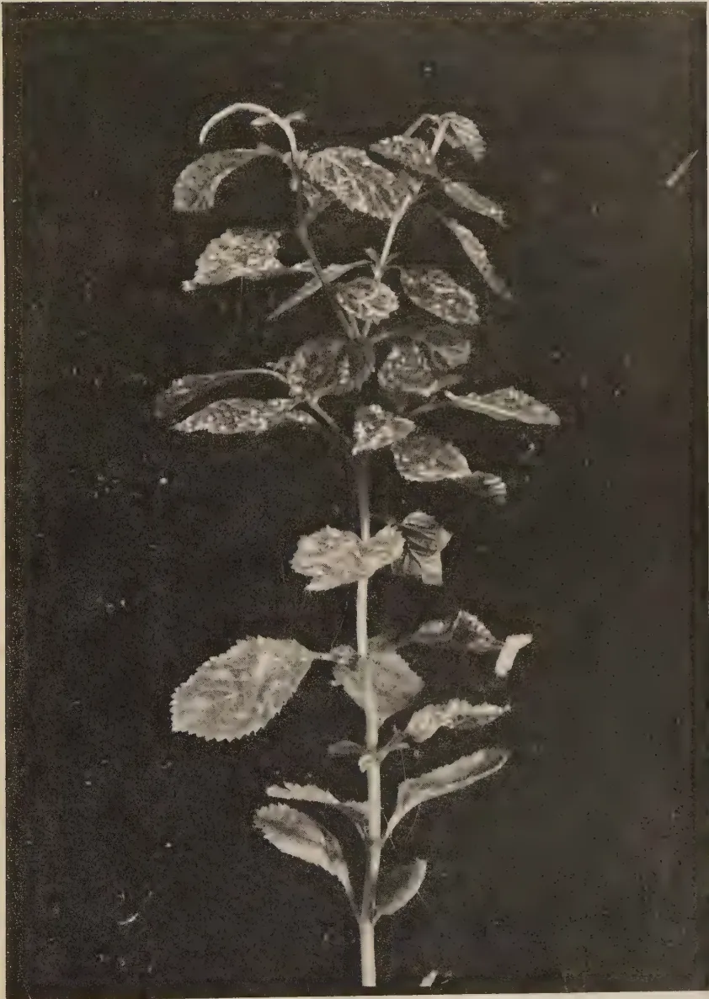
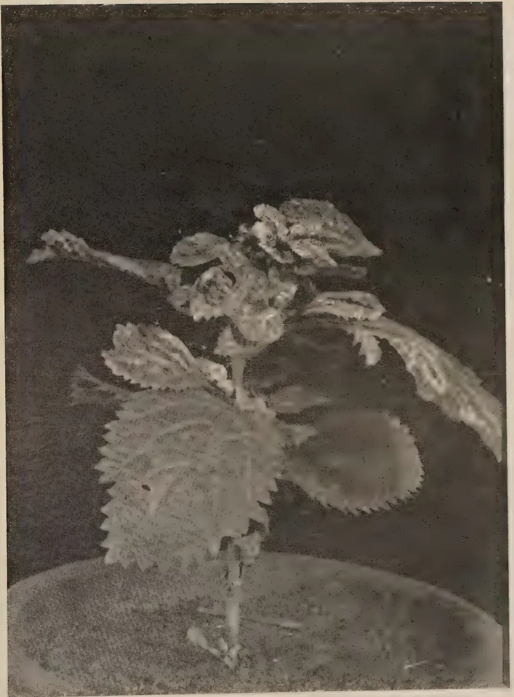
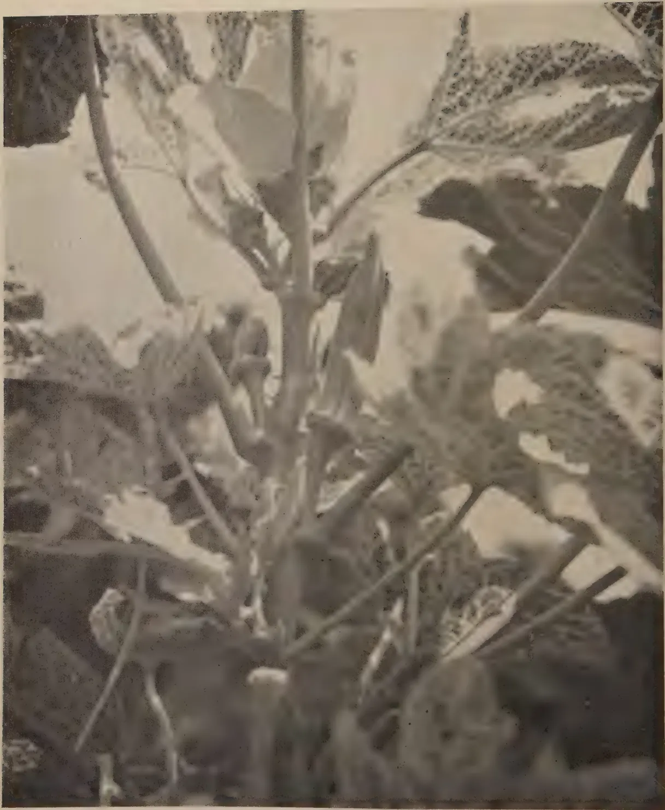
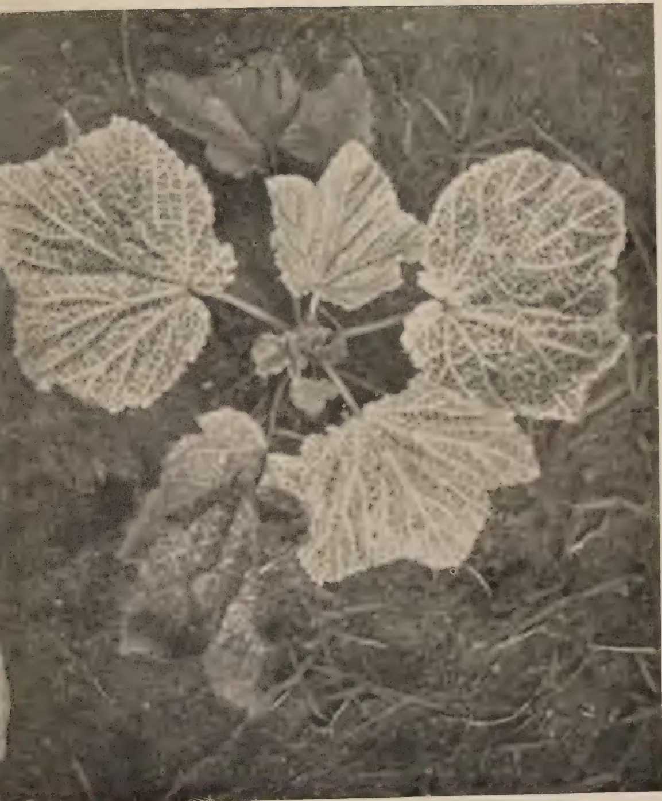

The
Tropical Agriculturist
VOL. XCVIII PERADENIYA, JANUARY-MARCH, 1942
No. 1
| PAGE | |
|---|---|
| Editorial .. .. . | 1 |
Hydnocarpus Oils in Ceylon. By R. Child, B.Sc., Ph.D. (Lond.),
The Tropical Agriculturist, October, 1941, page 203, line 23 : for "Sodium carbonate : 0·1 to 0·5 per cent." read "Sodium carbonate : 0·1 to 0·15 per cent.".
The Tropical Agriculturist, December, 1941, page 343, line 11 from bottom : for "thirtieth" read "thirteenth".
| Minutes of a Meeting of the Board of the Tea Research Institute held on December 18, 1941 .. .. . | 54 |
| Minutes of a Meeting of the Rubber Research Board held on February 23, 1942 .. .. . | 57 |
| Minutes of a Meeting of the Board of Management, Coconut Research Scheme, held on March 2, 1942 .. .. . | 60 |
| Handbook of Economic Entomology for South India .. .. . | 63 |
| Animal Disease Return for the Month ended December 31, 1941 .. .. . | 65 |
| Meteorological Report for the Month ended December, 1941 .. .. . | 66 |
1-- J. N. A 11400 (2/42)
This image is a scan of a blank page. The paper has a light beige or cream-colored tint. There are several small, dark specks scattered across the surface, which appear to be dust or scanning artifacts. No text, lines, or other markings are present on the page.The
VOL. XCVIII PERADENIYA, JANUARY-MARCH, 1942
No. 1
| PAGE | |
|---|---|
| Editorial .. .. . | 1 |
| Hydnocarpus Oils in Ceylon. By R. Child, B.Sc., Ph.D. (Lond.), F.I.C., and Wilfred R. N. Nathanael, B.Sc. (Lond.) .. | 2 |
| Some Virus Diseases of Stachytarpheta. By C. A. Loos .. | 8 |
| War Time Dietary. By Lucius Nicholls, M.D., B.C., B.A. (Cantab.) and A. Nimalasuriya, L.R.C.P. (Lond.), M.R.C.S. (England), M.B.B.S. (Lond.), M.R.C.P. (Lond.) .. .. . | 13 |
| The Nature of the Mosaic Disease of Bandakka. By M. Fernando, Ph.D. (Lond.) and S. B. Udurawana .. .. . | 16 |
| Departmental Egg Laying Competition, 1941 .. .. . | 25 |
| Items of interest in the activities of the Royal Botanic Gardens, Peradeniya .. .. . | 28 |
| Ash from Coconut and Oil Palm Waste Products as a Substitute Potassium Fertilizer .. .. . | 43 |
| Minutes of a Meeting of the Board of the Tea Research Institute held on December 18, 1941 .. .. . | 54 |
| Minutes of a Meeting of the Rubber Research Board held on February 23, 1942 .. .. . | 57 |
| Minutes of a Meeting of the Board of Management, Coconut Research Scheme, held on March 2, 1942 .. .. . | 60 |
| Handbook of Economic Entomology for South India .. .. . | 63 |
| Animal Disease Return for the Month ended December 31, 1941 .. | 65 |
| Meteorological Report for the Month ended December, 1941 .. | 66 |
1—J. N. A 11400 (2/42)
This image shows a blank, aged, light beige page, likely an endpaper or flyleaf from an old book. The paper has a slightly textured appearance with some minor discoloration and faint smudges, characteristic of old paper. There is no text or other markings on the page.The
Tropical Agriculturist
JANUARY TO MARCH, 1942
EDITORIAL
THE LESSON OF THE PADDY BUG.
REFERENCE was made in the last August number of the journal to the damage caused to paddy crops under the Walawe Irrigation Scheme by the pentatomid bug (Scotinophara (Podops) lurida Burm.). This insect first appeared in the form of a serious infestation in the 1939-40 North-East Monsoon season. In the following three seasons it assumed the proportions of a grave menace to rice cultivation in this area. Neither the scientific officers of the Department of Agriculture nor the experienced rice growers under the Scheme were able to contrive an effective method of combatting this dangerous pest. As an immediate remedy the former could only recommend the hand picking and the destruction of individual bugs; but the field owners were paralysed into inactivity by the magnitude of the task, even if they could overcome their objection, based on religious scruples, to the taking of life.
In the meantime investigation showed that the pentatomid bug was indigenous to the Island but generally kept within unobtrusive limits. In 1939 there were unusual floods; the water retaining bunds were breached and the fields suffered from inadequate cultivation. These facts seemed to justify the hypothesis that the floods had upset the balance of nature by destroying a parasitic organism or other factor that was adverse to the life of the bug, and that after a few seasons, with the return of normal conditions, the bug would retire from its temporary activity to its pre-flood obscurity. The experience of the 1941-42 North-East Monsoon season has proved the accuracy of this prognosis. A considerable number of bugs made their appearance in the field in the early weeks of the season, but they did not multiply. After a few days they disappeared altogether and the farmers gathered a normal harvest.
Man continues to remain ignorant of both the cause and the cure of this threatened catastrophe. But in this story he reads the old lesson again, that with regard to plant pests and their control nature maintains its own balance and, if it is disturbed by any extraordinary force, nature herself will restore that balance.
2REGINALD CHILD, B.Sc., Ph.D. (Lond.), F.I.C.,
DIRECTOR OF RESEARCH, COCONUT RESEARCH SCHEME,
AND
WILFRED R. N. NATHANAEL, B.Sc. (Lond.),
TECHNICAL ASSISTANT TO THE TECHNOLOGICAL CHEMIST
IN connection with investigations by the Department of Medical and Sanitary Services on the possibility of producing some local requirements of drugs, we have, at the request of various authorities, examined samples of Ceylon produced Hydnocarpus seeds and oils. A short account of the results is here presented.
In the first place we have examined seeds of Hydnocarpus wightiana Blume, and of H. Kurzii Warb. (= Taraktogenos Kurzii King), obtained through a private firm which has been cultivating these species, as well as H. anthelmintica Pierre, on an experimental scale for some years. H. wightiana seeds from this same source were examined by the Imperial Institute in 19351, and it is interesting to note the similarity of the present sample.
We have also examined two samples described as "Oleum Hydnocarpi", submitted respectively by the Superintendent, Civil Medical Stores (No. 1) and by the Secretary of the Sub-Committee for Local Preparation of Vegetable Drugs and Oils (No. 2). The first of these was stated to have been obtained from seed supplied by the same firm as mentioned above, and to have been expressed by a Colombo oil-milling firm. The second was probably of similar origin, though we were not definitely so informed.
We do not desire to attempt here any detailed survey of the extensive literature on Hydnocarpus oils, but consider it worth mentioning the work of Georgi and his collaborators in Malaya2 who examined seeds of H. wightiana and of H. anthelmintica grown in that country. His figures for Malayan H. wightiana oil are very similar to those for Ceylon oil found by the Imperial Institute and by ourselves and he gives reasons for favouring H. wightiana against H. anthelmintica, as we do for preferring H. wightiana to H. kurzii.
It is necessary to refer to pharmacopoeial requirements for Hydnocarpus oil. H. wightiana is the only species recognized by the British Pharmacopoeia, 1932, as the source of the official
3"Oleum Hydnocarpi". The U. S. Pharmacopoeia XI. of 1935, includes under "Oleum Chaulmoograe" the oil derived from any species of Hydnocarpus provided that it agrees with the specifications. H. kurzii was apparently the historic origin of Chaulmoogra oil, and so appears in the British Pharmacopoeial Codex, 1934. Oils of various Hydnocarpus spp. are in use in different parts of the tropics according to prevailing local species. We are of the opinion that, whilst it is desirable to adhere as far as possible to H. wightiana and thus to the B. P. official oil, other species available could be utilized in an emergency provided that the oils conform with, say, U. S. P. XI. specifications for chaulmoogra oil. Further we indicate that samples which fail to conform with the B. P. 1932 may still be a satisfactory source of Oleum Hydnocarpi Aethylicum B. P., the preparation of which is described from a mixture of our oils Nos. 1 and 2 (which failed to pass the B. P. 1932 specifications).
1. Seeds of Hydnocarpus wightiana.—A sample of about 5 lb. was received for examination. The results of examination of the seeds are given below, with those of the Imperial Institute for Ceylon seeds (19351) from the same source, and of Georgi et alii for Malayan seeds (19322) :
| Present Sample. |
Ceylon (1935) Sample. |
Malayan Seeds (1932). |
|
|---|---|---|---|
| Average weight of seeds (grams) | .. 1.02 | .. 1.35 | .. 1.40 |
| Average weight of kernels (grams) | .. 0.69 | .. 0.95 | .. 0.95 |
| Percentage of kernels | .. 67.6 | .. 70.5 | .. 68.0 |
| Percentage of shells .. | .. 32.4 | .. 29.5 | .. 32.0 |
| Per cent. moisture in kernels | .. 5.6 | .. 5.5 | .. 6.6 |
| Per cent. oil in kernels | .. 60.8 | .. 62.3 | .. 61.2 |
| Per cent. oil in kernels (dry weight) | .. 64.4 | .. 65.9 | .. 65.2 |
| Per cent. oil on whole seeds as received | 41.1 | .. 43.9 | .. 41.6 |
The oil extracted from the ground kernels by light petroleum (b. pt. 40–60°C) had the following constants, which are similarly compared with those of the other Ceylon and Malayan samples, and also with the B. P. 1932 specifications for Oleum Hydnocarpi.
| Present Sample. |
Ceylon (1935) Sample. |
Malayan oil. |
B. P. Requirements. |
|
|---|---|---|---|---|
| Sp. Gr. at 25°/25° C .. | 0.9594 | .. 0.9557 | .. 0.9534 (at 30°/15°) |
.. 0.950–0.960 |
| Sp. rotation in chloroform | +58.3° | .. +59.8° | .. +58.5° | .. not less than +53° |
| Refractive Index at 40°C | 1.4738 | .. 1.4740 | .. 1.4722 (calc.) |
.. 1.472–1.476 |
| Melting Point (B. P. Method) |
.. 23.4° | .. 24.5° | .. — | .. 20°–25° |
| Acid Value | .. 3.95 | .. 1.4 | .. 0.1 | .. not more than 25 |
| Saponification Value .. | 201.5 | .. 201.1 | .. 202.1 | .. 198–204 |
| Iodine Value (Wijs 30 mins.) per cent. |
.. 98.4 | .. 99.1 | .. 99.9 | .. 97–103 |
All samples conform with the requirements of the British Pharmacopoeia, 1932. Attention may be drawn to the high limit of acid value 25 allowed by the B. P. This appears to be quite unnecessary for H. wightiana oils. Georgi (loc. cit.) calls attention to the practically acid-free nature of his oil due to the seeds having been cleaned, dried and extracted without delay. Our sample had been kept for at least three months before extraction and the Imperial Institute samples must have been some time in transit to London.
J. Lowe and N. K. De3 consider oils of higher acid value than 10 undesirable for injection, and even acid values from 6 to 10 doubtful. There seems no reason why H. wightiana oils of acidities lower than 10 should not be regularly produced. The chief factor appears to be the early collection of the fruit and cleaning of the seeds from the watery fruit pulp. The seeds themselves keep quite well.
The B. P. also requires the oil to be almost wholly soluble in hot 90 per cent. alcohol. Many genuine oils of low acidity do not meet this requirement. In fact acid oils are more likely to do so than more or less neutral ones, and this specification seems usually to be disregarded by analysts.
2. Seeds of Hydnocarpus kurzii.—A sample of about 5 lb. was received; about half of the seeds were found to be decayed or empty. Examination was confined to sound seeds, the average weight of which was 2.54 grams; average weight of kernels 1.63 gms. Percentage of shells was 34.7 per cent. and of kernels 65.3 per cent.
The kernels were crushed, dried and extracted with light petroleum (b. pt. 40–60°C).
| Moisture (per cent. of kernels) | .. | .. | 7.5 |
| Oil (do.) | .. | .. | 53.7 |
| Oil (do. dry weight) | .. | .. | 58.0 |
| Oil as per cent. of whole seeds | .. | .. | 35.1 |
The oil obtained by extraction had the following constants:—
| Specific gravity at 25°/25° C | .. | .. | 0.9491 |
| Melting point (B. P. Method) | .. | .. | 22° C |
| Specific rotation in chloroform | [] | 30° D |
+46.2° |
| Refractive Index at 40° C | .. | .. | 1.4728 |
| Acid value | .. | .. | 19.1 |
| Saponification value | .. | .. | 198.8 |
| Iodine value (Wijs 30 mins.) per cent. | .. | .. | 92.4 |
This oil does not quite conform with the B. P. C. or U. S. P. XI. requirements for chaulmoogra oil, both iodine value and specific rotation being low. It would not be a competitive product commercially and its use locally would only be justified if genuine oils conforming to specifications were totally unavailable.
5The keeping properties of the seeds are not so good as those of H. wightiana seeds, as reflected in their condition when examined, and the much higher acid value of the oil, although this was obtained from the selected good seeds. Further, the oil yield is lower.
Georgi (loc. cit.) similarly points out that H. anthelmintica oil is inferior to that of H. wightiana. The low iodine values and specific rotations of H. kurzii and H. anthelmintica oils are due to the presence of palmitic acid which is substantially absent from H. wightiana oil.
As Georgi states, provided that agriculturally more or less equally satisfactory results are obtained with H. wightiana, this is the species to prefer for cultivation.
3. Samples of "Oleum hydnocarpi".—These had the following constants:—
| Sample No. 1. |
Sample No. 2. |
|
|---|---|---|
| Specific gravity 25°/25° C .. | 0.9544 | 0.9550 |
| Melting Point (B. P. Method) .. | 24.0° | 22.0° |
| Specific rotation in chloroform .. | +51.1° | +54.1° |
| Refractive Index at 40° C .. | 1.4728 | 1.4742 |
| Acid value .. | 7.4 | 19.1 |
| Saponification value .. | 203.6 | 202.2 |
| Iodine value (Wijs. 30 mins.) per cent. | 93.6 | 96.8 |
The first sample would be acceptable as Oleum Chaulmoograe U. S. P. XI., but not as Ol. Hydnocarpi b. p. With only the information given us as to its origin we can only suggest that the source of the oil was a mixture of seeds.
No. 2 conforms with the B. P. 1932 specifications except for the iodine value, which is however barely under the lower limit. It is not impossible that genuine samples of H. wightiana oil may occasionally be met with having such slightly low iodine values. Grun and Halden4 for example quote a range of 92–102.5. The requirement for specific rotation should however be insisted on, as genuine oils are unlikely to have a lower value than the B. P. limit of +53°.
The acid value of sample 2 is high but within the B. P. limit. However, as stated above, there is no reason for the production of oil with such high values.
We reported this sample as probably a genuine H. wightiana oil, with the reservation that it could not be regarded as entirely satisfactory.
4. Preparation of Ethyl Esters of Hydnocarpus Oil.—To examine the suitability of inferior oils for the preparation of Oleum Hydnocarpii Aethylicum, B. P. we used a mixture of equal parts of oils Nos. 1 and 2 for a trial.
6The preparation of the esters is sometimes carried out by direct "alcoholysis" of the oil by means of absolute alcohol and sulphuric acid. We are of opinion that a purer product is obtainable by the intermediate isolation of the fatty acids, and that the final distillation is more satisfactory and results in less losses. Distillation of the esters obtained by direct "alcoholysis" is always accompanied by some decomposition.
62 grams of the mixed oils (I. V. 95.7) were saponified by boiling for six hours with 18 grams of caustic soda and 480 c.c. of alcohol. The free fatty acids isolated from the resulting soap solution were converted into esters by boiling under reflux with 200 c.c. of absolute alcohol and 5 c.c. of concentrated sulphuric acid. The esters, isolated in the usual manner by ether extraction, were freed from acid by washing the ether solution with dilute potassium carbonate solution followed by several water washings. Removal of the solvent left 64 gms. crude esters, which were distilled in vacuo, b. pt. (3 mm.) 178–184°C. and 54 gms. collected. This was redistilled at 1mm. pressure approx. The first c.c. of distillate was rejected and then 51 gms. of final product collected at 159–176°C.
| B. P. 1932 requirements for Oleum Hydno- carpi Aeth. |
||
|---|---|---|
| Specific gravity at 15.5°/15.5° | .. 0.9078 | .. 0.905–0.910 |
| Specific rotation in chloroform | .. +55.3° | not less than +45° |
| Refractive Index at 20°C. | .. 1.4598 | .. 1.458–1.462 |
| Acid value | below 0.3 | not greater than 1.0 |
| Saponification value .. | .. 191.9 | .. 190–196 |
| Iodine value (Wijs 30 mins.) per cent. | .. 91.0 | .. 88–94 |
The sample conforms in every way to B. P. requirements.
Hydnocarpus wightiana is to be preferred to other species by reason of the better suitability of its oil for medicinal purposes, the higher oil content of the seeds and the better keeping qualities of the seeds. This preference is indicated by the B. P. 1932 requirements, which recognize only H. wightiana as a source of Oleum Hydnocarpi.
There is no reason why all required supplies of good quality oil of H. wightiana should not be produced in Ceylon if the plant is cultivated on a sufficient scale. The cultivation of H. wightiana is to be preferred to that of other species for the reasons given.
In the absence of external supplies of Hydnocarpus oils of B. P. standard and of sufficient local production, alternative oils conforming to the chaulmoogra oils of the U. S. P. XI. or
7other pharmacopoeia could be employed. Only in the absence of even such alternative oils should oils not conforming to any of these specifications be employed.
Hydnocarpus oils not up to B. P. standard may serve as a source for the preparation of Ethyl Esters of Hydnocarpus Oil.
In the preparation of Ethyl Esters of Hydnocarpus Oil, it is preferred to isolate and esterify the fatty acids rather than to proceed by direct "alcoholysis" of the original oil. A purer crude product is obtained which can be distilled with less loss and decomposition.
By
C. A. LOOS,
TEA RESEARCH INSTITUTE OF CEYLON.
THE virus diseases of Stachytarpheta jamaicensis Vahl (Balu-nakuta Sinhalese and Nay-uranchi, Tamil) described in this paper were observed in one locality in the Kandy District in September, 1941.
The diseased plants could be divided into three types according to their dominant symptoms. In one, the most characteristic symptom was the presence of irregular yellow blotches on the leaves; so this disease may be classed as a mosaic. In another, the most notable character was the dwarfing of the internodes and leaves; this disease has been termed Rosette. The third type is different from the preceding in that the yellow areas of the leaf are restricted to lines coinciding with the veins; consequently it has been termed Yellow vein-banding. It seems advisable to keep the three types distinct until it is determined whether more than one virus is concerned in their causation.
The plant is a very common weed especially in the low and mid-country of Ceylon. Of itself, the weed is of no economic importance but any disease to which the weed is subject naturally assumes importance if the disease should pass readily to a crop plant and thereby cause loss. It is probable that at least one of these diseases will affect tobacco, and is also carried by the weed Ageratum conyzoides.
Symptoms.—Viewed from the upper surface the most characteristic symptom is a bright yellow blotching of the leaves. These blotches vary in number and size; they originate at the veins and spread into the inter-veinal areas. The yellow blotches never become necrotic but tend to become brighter yellow as the leaf gets older. Associated with the blotching is a vein clearing, the veins being translucent when the leaves are held up to the light. On the lower surfaces of the leaf, the blotches are paler in colour and the veins are more prominent than normally is the case.
Occasionally the more severely affected leaves are abnormal in shape and are distorted but never curled. The inter-veinal

A black and white photograph of a Stachytarpheta Jamaicensis plant. The plant has a central, upright stem with several pairs of leaves. The leaves are ovate with serrated margins. The upper leaves are more prominent and show distinct yellow blotches and mottling, which are characteristic of mosaic symptoms. The lower leaves are also visible but appear less affected. The plant is set against a dark, solid background, which makes the lighter-colored leaves and yellow blotches stand out. The overall appearance is that of a diseased or stressed plant.Block by Surrey Dept.
FIG. 1.—DISEASED Stachytarpheta Jamaicensis PLANT SHOWING MOSAIC (YELLOW BLOTCH) SYMPTOMS.
This image is a scan of a blank page. The paper has a light beige or cream-colored tint. There are a few very small, dark specks scattered across the surface, which appear to be scanning artifacts or dust particles. No text, lines, or other markings are present on the page. 9areas outside the blotches are darker green, and when viewed from above are convex; this gives such leaves a crumpled appearance.
Many plants carried healthy leaves at the base of the stems, while branches arising from the axils of these apparently healthy leaves showed marked mottling and other disease symptoms. It is probable that these healthy leaves were fully developed before infection took place as transmission experiments show that these leaves formed after infection develop disease symptoms. It is immaterial whether the leaves are formed on the main stem from the terminal bud or on branches from axillary buds subtended by apparently healthy leaves.
Transmission Experiments.—Attempts were made to transmit the disease to healthy Stachytarpheta jamaicensis plants, established in 6 in. pots, by mechanical means without success. In all, 12 attempts were made but all failed, even when carborandum was used as an abrasive.
No difficulty was experienced, however, in transmitting the disease when grafting methods were used. The Stachytarpheta plants were cleft grafted, bound with raffia, and then covered by bell jars to maintain humid conditions for two weeks. In one experiment 4 diseased scions were grafted to healthy stocks, and in another, one healthy scion was grafted to a diseased stock. In every case the disease symptoms were transmitted. When diseased scions were used, symptoms were observed 16–22 days after the grafts were made, but in the case where a healthy scion was grafted to a diseased stock the symptoms were not observed in the scion till the 10th week after grafting.
That a virus will pass more readily downwards through a graft union from a diseased scion to a healthy stock has previously been noted. In experiments with a virus of Ageratum conyzoides (3) healthy scions failed to exhibit any symptoms after 3 months whereas when diseased scions were grafted on healthy stocks the disease was readily transmitted after sixteen days. Bennett (1) working with tobacco plants noted that the virus passed more readily downwards than upwards to the healthy part of a graft. He found, however, that the upward movement of the virus could be accelerated by defoliating the healthy tops.
In the experiment with Stachytarpheta under consideration, when the healthy scion failed to show any diseased symptom after a month, the main leaves were removed from the scion, which however was not completely defoliated. It is probable however that this partial defoliation assisted the upward movement of the virus, as symptoms became evident 5 or 6 weeks
10later. The development of symptoms then followed the same course as that noted when diseased scions were used.
The disease appeared first on the growth in the axils of the uppermost leaves of the healthy stock, just below the union. The first symptom was the curling of the newly opening leaves, a symptom not observed on the diseased plants in the field. The leaf edges turned downwards and gave the leaf a cupped appearance. About the same time vein clearing and yellow mottling began to occur on these newly opening leaves. Sometimes the vein clearing preceded mottling and at others the mottling was observed first. Vein clearing was at first more noticeable in the region of the mottle than in other portions of the leaf. The marked downward cupping of the leaf edges disappeared when the leaf was almost fully grown. Similar symptoms developed on all leaves produced later and the symptoms became more obvious as the plants grew older. Leaves produced before grafting remained apparently healthy throughout the experiment. It was only after about months that new growth was produced from axillary buds well below the union; this growth immediately exhibited all the above symptoms.
Figure 1 is a photograph of a typical diseased Stachytarpheta plant from the field.
Symptoms.—Only one plant was found exhibiting this typical symptom. It showed all the characteristic symptoms of mosaic but in addition, diseased leaves were dwarfed and crowded together on short internodes. This rosetting of the terminal and axillary growths gave the plant a stunted appearance as may be seen from fig. 2, which is a photograph of the plant as found in the field. In the photograph, large healthy leaves can be seen, with well spaced nodes, but higher up, leaves are crowded together with hardly any elongation of the internodes. Growths from the axils of the large, apparently healthy leaves are badly rosetted too.
Although only one such plant had been found, the rosette character was so dominant that it appeared advisable to ascertain whether this abnormal character could be transmitted to a healthy plant.
Transmission.—The top of the diseased plant was cut off just above the two apparently healthy leaves, and then cleft grafted to a healthy plant similarly cut back. All axillary buds on the healthy stock were dormant at the time the graft was made. The graft was covered with a bell jar for two weeks.
Disease symptoms appeared, after 3 weeks, in the first leaves produced on the axillary shoots from the uppermost pair of

A black and white photograph of a Stachytarpheta Jamaicensis plant, likely in a pot, showing symptoms of 'ROSETTE' disease. The plant has several large, serrated leaves that appear distorted, curled, and somewhat drooping, which are characteristic symptoms of this disease. The plant is set against a dark, solid background, which makes the lighter-colored leaves stand out. The pot is visible at the bottom of the frame.Block by Survey Dept.
FIG. 2.—“ROSETTE” DISEASE SYMPTOMS ON Stachytarpheta Jamaicensis.
This image is a scan of a blank page. The paper has a light beige or cream-colored tint. There are a few very small, dark specks scattered across the surface, which appear to be scanning artifacts or dust particles. No text, lines, or other markings are present on the page. 11leaves on the stock just below the union. The curl of the leaf, yellow leaf blotch and vein clearing such as occur in mosaic were the first symptoms noted. No shortening of the internodes on these axillary shoots was observed. In later growth however the internodes were much shortened and the leaves remained small. The axillary buds on these shoots developed into stems with characteristic rosette symptoms. By the end of two months after grafting the rosetted appearance was very marked and all new growths developed on the originally healthy stock were badly rosetted and in addition exhibited the typical mosaic symptoms.
It seems highly probable that the rosette symptoms result from infection by a second virus which may be carried by plants infected by the mosaic virus. The plant used for the experiment probably carried both, one causing the mosaic symptoms and the other the rosette symptoms. Whether the rosette virus can exist independently of the mosaic virus is not known. It is also possible that the incubation period of the rosette virus is somewhat longer than that of the mosaic virus as in the transmission experiment the mosaic symptoms occurred first.
Symptoms.—The symptoms of this disease are similar to those described for Ageratum conyzoides (3). The most characteristic symptom of this disease is the presence of yellow lines which coincide with the veins. These lines are broader than the veins as the yellow colour extends into the interveinal tissues but green islands are always left between the veins; blotches are never found. The leaves are normal in shape without curl or distortion. There are no vein thickenings nor enations such as sometimes occur in Ageratum.
Only one specimen was found exhibiting these symptoms. That specimen was found growing almost in contact with Ageratum conyzoides which had similar symptoms. The proximity of these plants and the similarity of the symptoms left no doubt in the writer's mind that they were caused by the same virus. That virus is closely related to, if not identical with, the virus that causes leaf curl in tobacco.
No transmission experiment was attempted with this plant.
Deighton (2) has recorded the presence of tobacco leaf curl virus in Stachytarpheta sp. in Sierra Leone. Elsewhere (3) the opinion has been expressed that the yellow vein banding disease of Ageratum conyzoides is caused by a virus or strain of virus belonging to the tobacco leaf-curl group. From the foregoing it is probable that the same virus can also attack Stachytarpheta.
12No previous record of the diseases here described as mosaic and rosette on Stachytarpheta jamaicensis are known to the writer. These diseases are undoubtedly caused by viruses but whether they are related to the tobacco leaf curl or other known virus of economic importance is unknown.
Three virus diseases of Stachytarpheta jamaicensis are described.
The diseased plants are divided into three types according to their dominant symptoms, namely, Mosaic (yellow blotch), Rosette and Yellow vein-banding.
The mosaic and rosette symptoms were transmitted to healthy Stachytarpheta jamaicensis plants by grafting.
I wish to record my thanks to Dr. C. H. Gadd of the Tea Research Institute for his helpful criticism in the preparation of this paper.
(From the Nutrition Division of the Medical Department).
RECENT dietary surveys have shown the quality and quantity of the diets consumed by the masses of Ceylon (Cey. J. of Sci. Vol. V., pt. 3).
Table I. gives the average composition of the diets of over 200 families in rural areas :
Table I.—Average Composition of Rural Diets.
(In oz. per man value per day).
| Rice (and other cereals) .. | .. | 16.6 |
| Yams, Jak and Breadfruit | .. | 2.3 |
| Pulses .. | .. | 0.2 |
| Vegetable leaves .. | .. | 0.5 |
| Vegetable fruits, &c. .. | .. | 1.4 |
| Ripe fruits .. | .. | 0.1 |
| Fish and meat .. | .. | 2.2 |
| Milk .. | .. | 0.4 |
| Sugar .. | .. | 1.1 |
| Coconut kernel .. | .. | 1.8 |
2. This average diet may be used for the purpose of recommending substitutes for rice. But it must be emphasized that this diet is deficient in certain respects, such as in calcium, vitamin A and riboflavin. Therefore in proposing substitutes for rice we will also attempt to improve this diet.
3. It has been roughly estimated that two thirds of the rice consumed in Ceylon is imported. Although the amount imported is known there are no accurate figures of the amount produced in Ceylon.
We will assume that the present population of Ceylon is 6,200,000, and allow the following coefficients for age and sex :—
| Adult male (over 14 years) | .. | 1.0 |
| Adult female (over 14 years) | .. | 0.8 |
| Child 12 and 13 years .. | .. | 0.8 |
| Child 10 and 11 years .. | .. | 0.7 |
| Child 8 and 9 years .. | .. | 0.6 |
| Child 6 and 7 years .. | .. | 0.5 |
| Child 4 and 5 years .. | .. | 0.4 |
| Child 2 and 3 years .. | .. | 0.3 |
| Child 0 to 2 years .. | .. | 0.2 |
Table II. is worked out on these figures and indicates the amount of rice necessary on the basis of 18 oz. per man unit which is slightly more than the average consumption given in Table I. This allows for a little waste and the higher consumption of rice in the urban areas and on estates.
14Table II.—Estimated Normal Consumption of Rice| Age Group | Population (1942) (estimated) |
Coefficient | Total adult units |
|---|---|---|---|
| 0·4 .. | 887,300 .. | 0·25 .. | 221,825 |
| 5·9 .. | 793,500 .. | 0·50 .. | 396,750 |
| 10·14 .. | 763,100 .. | 0·75 .. | 572,325 |
| Women over 14 years | 1,741,600 .. | 0·8 .. | 1,393,280 |
| Men over 14 years .. | 2,021,400 .. | 1·0 .. | 2,021,400 |
6,206,900 |
4,605,580 |
Total consumption of rice at 18 oz. per unit per day=16,885,000 cwt. per year. As approximately 11,000,000 cwt. of rice was imported in 1940 it follows that about 5,900,000 cwt. are produced locally which is roughly in accordance with the usually accepted estimate.
4. It is necessary to make proposals comprehending some definite degree of shortage. We propose to work on a basis that the rice available may become half of that consumed in normal times. This means that 5,900,000 cwt. or more will be grown locally and probably 2,500,000 cwt. imported. But recent increases in local production may considerably reduce the latter figure of two and a half million.
5. The best substitutes for rice are other cereals; and the only cereals which can be satisfactorily grown in Ceylon are millets (such as kurakkan, meneri, thana) and maize.
6. Roots such as sweet potatoes, yams and manioc, although not such good substitutes may be used to make up the deficiencies.
7. More than 500,000 cwt. of pulses are imported yearly. Attempts should be made to increase the local production of pulses, but in any curtailment of imports, pulses should have priority over rice because they supply important nutritive principles in a much smaller space.
8. Table III. gives a specimen, rice substituted, diet for an adult :—
Table III.—Specimen Diet.| Oz. | |
|---|---|
| Rice .. .. | 8 |
| Millets (kurakkan, meneri, &c.) or maize .. | 3 |
| Yams (or other tubers) .. .. | 16 |
| Pulses (dhals and grams) .. .. | 1·5 |
| Vegetable leaves .. .. | 2 |
| Vegetable fruits, &c. .. .. | 4 |
| Ripe fruits .. .. | 2 |
| Fish and meat .. .. | 2 to 3 |
| Sugar .. .. | 1 |
| Coconut .. .. | 6 |
Coconut might be increased to the limit of appetite as it has high caloric value.
159. Table III. shows that 2,800,000 cwt. of millet (4,900,000 bushels) and 1,400,000 cwt. of pulses (2,450,000 bushels) and 15,000,000 cwt. of tubers will be required to substitute about 9 oz. of rice per head for the whole population for a year.
10. It is difficult to change suddenly the dietary habits of any population. And if such quantities as these are to be grown against an emergency, the masses of Ceylon must be persuaded or induced to replace gradually by millets and tubers some of the rice they now consume; otherwise there will be a vast wastage.
February 14, 1942.
LUCIUS NICHOLLS.
ANANDA NIMALASURIYA.
M. FERNANDO, Ph.D. (Lond.),
ACTING BOTANIST
AND
S. B. UDURAWANA,
AGRICULTURAL INSTRUCTOR, MATALE SOUTH.
THIS paper presents some of the results of investigations initiated by the Research and Experiments Committee, Department of Agriculture, into the etiology of the mosaic disease of bandakka (Hibiscus esculentus L.).
Plants affected with mosaic exhibit yellow vein-banding and other symptoms that one associates with virus diseases.
Records of the areal distribution of diseased plants maintained at Raitalawela in the Matale District were subjected to statistical analyses for the purpose of determining whether the disease is physiological or parasitic. The binomial-series test demonstrated a significant departure from randomness in the distribution of diseased plants in the field. The analysis-of-variance and contingency-tables tests indicated that the deviation from randomness was due to the occurrence of neighbour infection.
The transmission of mosaic from affected scions to healthy stocks by budding definitely established the infectious nature of the disease. The disease is not seed-borne, and is not transmissible mechanically. Bandakka mosaic is evidently a virus disease which, in nature, is presumably carried by an insect vector.
In the Matale District, the mixed crop of bandakkas, cowpeas and cucumbers grown in rotation with paddy covers an area of nearly 300 acres every yala season. Mosaic, an obscure disorder with a symptom picture suggestive of a virosis, represents the most serious hazard in bandakka growing in this area. No troublesome diseases affect the other two components of the mixture. In 1940, the Research and Experiments Committee, Department of Agriculture, decided on initiating investigations into the nature of the mosaic disease of bandakka. The present paper records some of the results of these investigations.
This image is a scan of a blank page. The paper has a light beige or cream-colored tint. There are some very faint, blurry marks scattered across the surface, which appear to be scanning artifacts or minor imperfections in the paper itself. No text, lines, or other graphical elements are present.
Block by Survey Dept.
(Photo by S. N. R. Breckenridge.)
FIG 2.—MATURE BANDAKKA PLANT AFFECTED WITH MOSAIC.
17The most characteristic symptom of bandakka mosaic is yellow vein-banding in leaves which usually exhibit neither reduction in size nor distortion, but may sometimes show interveinal buckling (Figs. 1 and 2). Leaves may develop minute enations on the abaxial side of the net veins. The most important economic effect is reduction in yield. Apart from depressed yields, the fruits themselves are reduced in size and malformed, and often exhibit excrescences at their distal ends. The fruits of affected plants in varieties which normally produce dark green fruits, become pale and chlorotic. The most important variation in symptom expression observed is the occasional extension of the chlorosis to the whole leaf surface.
The first objective in the present study was to determine whether bandakka mosaic was a physiological disorder or a disease caused by a parasitic organism; a parasitic disease would be infectious. It was felt that an examination of records of the distribution of the disease in the field would throw considerable light on this question. A two-acre block was selected in the heart of the vegetable growing area at Raitala-wela in the Matale District, for the maintenance of records of disease incidence. In this area, several components of the weed flora, e.g., Ageratum conyzoides L. (S. Hulan-tala) Vernonia cinerea Less. (S. Monara-kudimbiya) and Emilia javanica C. Rob. (S. Kadu-para), exhibited the type of symptoms that one is familiar with in virus diseases, and the possible function of these weeds as alternate hosts of bandakka mosaic was evident. The experimental block and a border 50 yards wide immediately surrounding it were carefully cleared of all suspected weeds prior to planting. It was, however, not possible to induce the owner of a contiguous field to discontinue an area of bandakkas severely affected with mosaic. The relation of the proximity of this patch of disease to the drift of infection in the experimental block will be seen later. The land was prepared in the usual way. Seeds obtained from healthy plants in Padiwita, an area relatively free from mosaic, were dibbled on May 24, 1941, in hills spaced 3 ft. 3 ft. The seedlings were thinned to one per hill. Mosaic was first observed in the area on June 17, when the plants were 21 days old. Daily records of disease incidence were maintained.
The Binomial-series Test for Randomness in the Distribution of Diseased Plants.—The development in recent years of statistical methods appropriate to plant pathological and entomological problems is due to Cochran, and for a detailed discussion of the methods applied below, reference may be made to his papers (1936 and 1938).
18If the diseased plants were scattered completely at random in the field, every plant possessing the same independent chance of developing the disease—as, for instance would be the case with most physiological disorders and all seed-borne diseases—the distribution should, within the limits of error, conform to the binomial law. The records made in yala, 1941, at Raitalawela, of the incidence of bandakka mosaic were subjected to the binomial-series test (Appendix 1). The results indicated that the diseased plants were not disposed in the field in a random manner. This deviation from randomness can be caused by the operation of either one or both of the following factors :—
It will be demonstrated below that both these factors have contributed to the observed departure from a random arrangement.
The Analysis-of-Variance Test for Gradients of Infection.—This test demonstrated the existence of a drift of infection from one end of the field to the opposite end (Appendix 2); the incidence of mosaic was highest at the end nearest the diseased smallholding and lowest at the end most remote from that smallholding.
The Contingency-Tables Test for Neighbour Infection.—Evidence advanced above suggests that the initial infestation of the experimental block originated externally in the adjacent infested smallholding. In an apparently infectious disease of this type, one would expect the occurrence of subsequent infection of healthy plants in the immediate neighbourhood of plants previously diseased. The demonstration of the radial spread of bandakka mosaic from initial foci would conclusively prove that the disease is infectious. The application to the Raitalawela data of the contingency-tables test advocated by Cochran (1936) indicated the occurrence of neighbour infection (Appendix 3).
Transmission by Seed.—An experiment designed to determine whether mosaic is seed-borne was set down at Raitalawela in yala, 1941. Plots were planted with seed obtained from healthy plants and from plants affected with mosaic. The differences in percentage infection in plants from the two types of seed were not significant (Appendix 4).

Block by Survey Dept.
FIG 1.—BANDARKA SEEDLING AFFECTED WITH MOSAIC.
(Photo by S. N. R. Breckenridge.)
This image is a scan of a blank page. The paper has a light beige or cream-colored tint. There are a few very small, dark specks scattered across the surface, which appear to be scanning artifacts or dust particles. No text, lines, or other markings are present on the page. 19It was realized that the infectious nature of the disease would contribute to a levelling down of differences in final incidence, and the date of appearance of symptoms appeared to be the more appropriate criterion. The intervals between sowing and the appearance of symptoms in the two types of seed did not, however, differ significantly from one another.
Transmission by Mechanical Methods.—Séin's needle-puncture method (Séin, 1930), Holmes's multiple-insect-pin method (Holmes, 1928), and Samuel's glass-spatula method (Samuel, 1931) were employed in attempts at mechanical transmission of mosaic to healthy suscepts in an insect-proof cage. None of the inoculated suscepts developed symptoms of the disease.
Transmission by Budding.—Twenty large carthenware pots in an insect-proof cage at Peradeniya were sown with bandakka seed obtained from mosaic-free plants in Padiwita. On germination, the seedlings were thinned to three per pot, and one seedling in each pot was subsequently patch-budded with diseased material. The budwood was obtained from bandakka plants severely affected with mosaic, grown at the vegetable station, Matale, and was subjected to an insecticidal spraying before use. Twenty-four days after the date of budding, the stock was cut back to a height of a few centimetres above the point of budding; the waxed tape had been removed sometime earlier. Mosaic symptoms were first observed in scion and stock sprouts 44 and 51 days after the date of budding respectively. Except in three instances, satisfactory stock-scion union, as indicated by the condition of the scion bud, was achieved (Appendix 5). In only seven of the 17 successful unions, was any bud break observed during the currency of the experiment. The absence of bud break did not, however, completely inhibit the transmission of the disease to the stock. In instances where successful stock-scion union had been achieved, 82.4 per cent. of the stock buds that sprouted subsequent to budding developed symptoms of mosaic. Stock sprouts in every one of the stock-scion combinations in which the scion buds had sprouted, exhibited mosaic symptoms. All scion sprouts continued to exhibit symptoms. These results have been confirmed in field experiments.
As the amount of information available at the time these investigations into the etiology of bandakka mosaic commenced was relatively scanty, the experiments were largely exploratory. The symptom picture suggested a virus disease, but numerous physiological chloroses, for instance, simulate virus diseases. The statistical analyses of records of disease incidence aimed at establishing whether a parasite was involved. The binomial-series test demonstrated a significant departure from randomness in the distribution of diseased plants. It has been shown
20that two factors have contributed to this deviation from randomness, viz. (1) the existence of a drift of infection from the border nearest a smallholder's plot of bandakka severely affected with mosaic, and (2) the tendency of diseased plants to appear in the proximity of plants previously diseased.
The existence of border infection in the Raitalawela records is of considerable interest. It will be remembered that all weeds suspected of being alternate hosts were carefully rogued out of the area and out of a fifty yard border immediately surrounding the area. No marked border infection was observed in records maintained at Nagolla and at Matale in fields where no roguing had been done, and it appeared that in the latter instances the original infection was effected within the bandakka fields by weed hosts. It may be suggested, in the instance of the Raitalawela field, that, if the roguing of suspects had been supplemented by the roguing of diseased bandakka plants in the adjacent smallholding, the experimental crop might have escaped the disease completely.
The volume of evidence provided by the statistical analyses indicates that bandakka mosaic is infectious. Numerous attempts have been made in the past to isolate a pathogenic fungus or bacterium from affected plants, without success. It appeared likely that an insect may be responsible either directly or as the vector of a virosis. The damage is not of the type one associates with direct insect injury. Moreover, in Raitalawela, at the end of the season, almost every plant in a bandakka field is affected with mosaic. If mosaic is the result of direct insect injury, this high disease incidence would be correlated with a dense infestation of the causal insect. Insects have not been observed in diseased bandakka fields at Raitalawela in the numbers postulated.
Preliminary transmission experiments showed that bandakka mosaic is not seed-borne. It may be mentioned, in this connexion, that the number of seed-borne virus diseases is not very large. It was not found possible to transmit mosaic by mechanical sap inoculation. Patch-budding of diseased scion material, on the other hand, resulted in the infection of healthy stocks. The transmission of the disease by methods of budgrafting provides the most conclusive piece of evidence for the belief that mosaic in bandakka is caused by a virus. In nature, the disease is presumably spread by an insect vector. Roguing of diseased plants and of alternate hosts appears to provide the most practicable method of mosaic control.
I am grateful to Dr. J. C. Haigh, Botanist, for valuable advice during the course of the work, and to Mr. S. N. R. Breckenridge, Kandy, for the photographs.
21REFERENCESCochran, W. G. 1936 .. Statistical Analysis of Field Counts of Diseased Plants. Supplement to J. Roy Stat. Soc. III., pp. 49-67
Do. 1938 .. Some Difficulties in the Statistical Analysis of Replicated Experiments. Empire J. Expt. Agric. VI., pp. 157-175
Fisher, R. A. 1934 .. Statistical Methods for Research Workers. Edinburgh: Oliver & Boyd. Fifth Edition
Holmes, F. O. 1928 .. Accuracy in Quantitative Work with Tobacco Mosaic Virus. Bot. Gaz. LXXXVI., pp. 66-81
Samuel, G. 1931 .. Some Experiments on Inoculating Methods with Plant Viruses and on Local Lesions. Ann. Appl. Biol. XVIII., pp. 494-507
Séin, F. 1930 .. A New Mechanical Method for Artificially Transmitting Sugar-cane Mosaic. Puerto Rico Agr Dept. Journ. XIV., pp. 49-68
APPENDIX IFor the purposes of the application of the binomial series test, which may be used for examining the significance of deviations from randomness, the field is divided up into small unit groups of adjacent plants. Let there be such groups, each containing plants of which plants are diseased, and let the chance of any plant's being diseased be , and the chance of any plant's remaining healthy be (). An estimate of may be obtained by dividing the number of diseased plants in the field by the total number of plants.
where is the number of groups with diseased plants. If the diseased plants are scattered completely at random over the field, the distribution would conform to the one obtained by expanding the binomial, . The th or general term, , of this expansion gives the expected frequency of groups with diseased plants. The series of theoretical frequencies may be compared with the frequencies actually recorded in the field by the use of a test. Cochran (1936) suggests that the commonly employed is relatively insensitive, and recommends the more appropriate one based on the estimated variance of a binomial distribution, furnished by Fisher (1934).
The Raitalawela area was partitioned into 264 unit nine-plant squares measuring . The observed frequencies, , of squares with diseased plants are given in column 2 of Table 1. The expected frequencies are given in column 3 of the same table. It is evident that the recorded frequencies deviate from the theoretical distribution in (a) the occurrence of larger numbers of squares with and with diseased plants, and (b) the occurrence of fewer squares with 3 or 4 diseased plants. Fisher's calculated
22in the way explained above yielded a value of 414.81 with 263 (= N-1) degrees of freedom. The value , distributed normally with unit standard deviation, is equal to 5.89, and is hence highly significant. There is evidently a significant departure from randomness in the arrangement of diseased plants in the field.
TABLE 1| No. of Diseased Plants (r) |
No. of Squares with r Diseased Plants (Nr) |
|
|---|---|---|
| Observed | Expected | |
| 0 .. | 23 | 15.41 |
| 1 .. | 63 | 51.43 |
| 2 .. | 76 | 76.35 |
| 3 .. | 36 | 66.10 |
| 4 .. | 29 | 36.78 |
| 5 .. | 24 | 13.65 |
| 6 .. | 8 | 3.38 |
| 7 .. | 4 | 0.54 |
| 8 .. | 1 | 0.05 |
| 9 .. | 0 | 0.00 |
| N = 264 | 263.39 | |
For the purpose of the analysis of-variance test it appeared desirable to divide the field into unit squares measuring 6 plants 6 plants, instead of into the smaller nine-plant units used in the binomial-series test. The 66 squares thus obtained were disposed in eleven columns and six rows. The percentages of diseased plants in the 36-plant squares are given in Table 2. The analysis of variance of these percentages transformed to the inverse-sine scale appropriate to the binomial distribution, viz., , is given in Table 2a. Neither the mean square for rows nor the regression component of this mean square is significant. The mean square for columns is, on the other hand, significant at the 0.1 per cent. point, and indicates the existence of a gradient of infection running perpendicular to the columns.
TABLE 2Percentages of Diseased Bandakka Plants in 36-Plant Squares.
COLUMNS.| 1 | 2 | 3 | 4 | 5 | 6 | 7 | 8 | 9 | 10 | 11 | |
|---|---|---|---|---|---|---|---|---|---|---|---|
| 1 | 11.1 | 19.4 | 8.3 | 25.0 | 38.9 | 27.8 | 22.2 | 25.0 | 30.6 | 66.7 | 38.9 |
| 2 | 16.7 | 11.1 | 16.7 | 16.7 | 36.1 | 22.2 | 22.2 | 25.0 | 30.6 | 41.7 | 36.1 |
| 3 | 13.9 | 19.4 | 22.2 | 16.7 | 19.4 | 22.2 | 41.7 | 22.2 | 50.0 | 44.4 | 63.9 |
| 4 | 13.9 | 13.9 | 13.9 | 13.9 | 19.4 | 25.0 | 25.0 | 19.4 | 38.9 | 52.8 | 55.6 |
| 5 | 22.2 | 5.6 | 11.1 | 16.7 | 27.8 | 36.1 | 30.6 | 19.4 | 27.8 | 33.3 | 66.7 |
| 6 | 11.1 | 16.7 | 19.4 | 22.2 | 30.6 | 22.2 | 30.6 | 27.8 | 30.6 | 27.8 | 33.3 |
| DF | SS | MS | VR | |
|---|---|---|---|---|
| Columns .. | 10 .. | 3501.00 .. | 350.10 .. | 12.81* |
| Rows .. | 5 .. | 92.59 .. | 18.52 .. | |
| Error .. | 50 .. | 1366.60 .. | 27.33 .. | |
| Total .. | 65 | 4960.19 |
* 0.1 per cent. point : < 4.21
APPENDIX IIIFor the purpose of the contingency tables test advocated by Cochran (1936), the plants in the experimental area may, at the end of a selected interval in the progress of the disease, be classified into healthy plants and plants which developed the disease during that interval. Each of these two classes may be further subdivided into those that occurred in the proximity of plants which had exhibited symptoms at the beginning of the selected interval, and those that did not occur in that proximity. As Cochran (1936) points out, the conception of proximity may be arbitrary, and will be determined by the nature and extent of the anticipated spread. In the present instance, any plant three feet distant from a previously diseased plant was classed as being near a diseased plant.
The Raitalawela data were used in the construction of Table 3. To calculate the ordinary for a contingency table, the following equation may be used :
Yates's correction was considered unnecessary as the frequencies were relatively large. The calculated value of was 27.08, and indicated significant neighbour infection.
TABLE 3| Diseased | Healthy | Total | |
|---|---|---|---|
| Near a diseased plant .. | 152 | 557 | 709 |
| Not near a diseased plant | 238 | 1175 | 1413 |
| Total .. | 390 | 1732 | 2122 |
The percentages of diseased plants and the intervals between sowing and the appearance of symptoms in plants derived from seed from healthy and diseased parents, are presented below.
The disease percentages were transformed to the inverse-sine scale appropriate to a binomial distribution, and the treatments were compared by the use of the 't' test : the differences were not significant.
The numbers of days from sowing to the appearance of symptoms were transformed to the square-root scale appropriate to a Poisson distribution and subjected to an analysis of variance : the differences were again non-significant.
24TABLE 4| Block | Seed obtained from | |||
|---|---|---|---|---|
| Healthy Plants | Diseased Plants | |||
| Percentage Mosaic | Mean Interval between Sowing and Appearance of Symptoms | Percentage Mosaic | Mean Interval between sowing and Appearance of Symptoms | |
| 1 .. | 27.8 | 39 days | 25.0 | 41 days |
| 2 .. | 16.7 | 44 | 25.0 | 40 |
| 3 .. | 16.7 | 43 | 2.8 | 41 |
| 4 .. | 8.3 | 39 | 2.8 | 47 |
| 5 .. | 16.7 | 44 | 22.2 | 44 |
| 6 .. | 36.1 | 41 | 27.8 | 37 |
| 7 .. | 25.0 | 41 | 33.3 | 37 |
| 8 .. | 19.4 | 44 | 16.7 | 38 |
| 9 .. | 22.2 | 40 | 8.3 | 39 |
| 10 .. | 27.8 | 39 | 27.8 | 46 |
| 11 .. | 13.9 | 43 | 11.1 | 38 |
| 12 .. | 33.3 | 39 | 16.7 | 42 |
| 13 .. | 19.4 | 40 | 16.7 | 40 |
| 14 .. | 33.3 | 44 | 22.2 | 45 |
| 15 .. | 16.7 | 39 | 13.9 | 41 |
| 16 .. | 30.5 | 40 | 25.0 | 42 |
The results of the experiment on the transmission of bandakka mosaic to healthy stocks by budding diseased scion material, are given below in Table 5.
TABLE 5| Pot No. | Bud Union. | Bud Break | Condition of Sprouts in Budded Plants | Condition of Control Plants | |
|---|---|---|---|---|---|
| Scion | Stock | ||||
| 1 .. | †* | —* | —* | healthy* | healthy |
| 2 .. | † | — | — | — | healthy |
| 3 .. | † | † | mosaic | mosaic | healthy |
| 4 .. | † | — | — | — | healthy |
| 5 .. | † | † | mosaic | mosaic | healthy |
| 6 .. | — | — | — | — | healthy |
| 7 .. | † | — | — | mosaic | healthy |
| 8 .. | † | — | — | mosaic | healthy |
| 9 .. | † | — | — | mosaic | healthy |
| 10 .. | † | † | mosaic | — | healthy |
| 11 .. | † | — | — | — | healthy |
| 12 .. | — | — | — | — | healthy |
| 13 .. | † | — | — | healthy | healthy |
| 14 .. | — | — | — | healthy | healthy |
| 15 .. | † | — | — | mosaic | healthy |
| 16 .. | † | — | — | — | healthy |
| 17 .. | † | † | mosaic | — | healthy |
| 18 .. | † | † | mosaic | mosaic | healthy |
| 19 .. | † | † | mosaic | mosaic | healthy |
| 20 .. | † | † | mosaic | mosaic | healthy |
* The symbols † and — in columns 2 and 3 indicate success and failure respectively in bud union or bud break; the symbol — in columns 4 and 5 indicates the failure to develop sprouts after budding.
25WITH the object of encouraging a competitive spirit between the various farms and stations of the Department of Agriculture on which poultry are bred an unambitious laying competition was arranged and ran throughout 1941, starting on 1st January and ending on 31st December.
It would of course have been desirable to have all the competing pens brought to one place and maintained under the same conditions. It was not possible to arrange this; so for our first attempt at a laying competition each pen remained at its own station.
The conditions of the competition were very simple. No age limit was imposed on the birds to be entered and no restrictions placed on diet nor on the type of housing used.
Each station had to enter 6 hens and two spares, these to be selected by the officer in charge of the station. All birds had to be trapnested and the accuracy of the egg recording was checked from time to time by visits from Staff Officers. A simple form of record card was issued and these were sent to Head Office each month for analysis. The number of eggs laid by the competing birds at each centre were published monthly in the Tropical Agriculturist.
It was originally intended that points could be allotted to each pen based on the standard points of each bird. Difficulty arose on account of the birds being scattered all over the island in allotting marks to each pen within a reasonably short period of time. It was considered unfair to allot points to one pen say in January at the beginning of the test and to others much later in the year. This intention was therefore abandoned. It may be said however that with the exceptions the birds entered were of a reasonably good utility standard.
Points were not allotted for egg size but opportunity was taken on the occasion of visits of inspection to check this. In nearly all cases the eggs laid were of satisfactory size. There were very few much over two ounces and also very few under that weight.
26The conditions of such a competition cannot be equal for all. For example, the large Farms have more birds to choose from than the small centres, again the starting date was arbitrarily fixed for 1st January. While that may have been reasonably suitable for stations on the western side of the island it may not have been so suitable for those on the east and so on.
In spite of these recognised inequalities it was considered well worthwhile to make a start and hold a competition although the conditions were far from ideal.
The results have proved that the decision was a wise one and many useful lessons have been learned. The results are published herewith and a few explanatory notes are appended.
In all 18 pens were entered. Each pen consisted of 8 hens or pullets; the record of the best 6 of the eight were counted in the final assessment of results. One point was allowed for each egg laid. In addition points were added or subtracted for mortality on the following basis:—A pen in which no deaths occurred during the year got a bonus of 200 points. One death during the year was taken as normal and no points either added or subtracted. For every death after the first, 100 points were deducted. All the birds entered were R. I. Rs.
One of the 18 pens had no deaths during the 12 months of the competition—That was Wariapola Agricultural Station and the following stations had one death each: Peradeniya Farm School Dairy, Labuduwa Central Agricultural Station, Horana Central Agricultural Station, Nikaweratiya Animal Breeding Centre, Karadian-aru, Ambepussa, Wariapola Farm School, Veyangoda Animal Breeding Centre, Murunkan Animal Breeding Centre. The remaining stations had the following number of deaths each:—Labuduwa Farm School 2; Akkarai-pattu Animal Breeding Centre 2; Batugedera 2; Anuradhapura Experiment Station 3; Jaffna Experiment Station 3; Tabbowa 2; Mapalana Farm School 4; Polonnaruwa Farm 4.
That is out of a total of 144 birds entered for the competition 30 birds died during the course of the 12 months or the rather high proportion of 20 per cent. The deaths are not however evenly spaced. Two stations accounted for 8 out of the total of 30 deaths. Exactly half of the pens entered (namely) 9 out of 18 had only one death and one station had none at all. The percentage of mortality among the 80 birds from these ten stations was only 11 per cent.
That compares very favourably with the death rate at official laying competitions in Great Britain which has reached as high as 16 per cent. in recent years. Causes of death included:—Rupture of the oviduct, snake bite, heat stroke, rupture of the liver and in a number of cases the cause
27of death was not determined. The total number of eggs laid by the 108 scoring birds was 19,033; that is an average of over 176 per bird for the 12-month period. The highest score was made by Peradeniya Farm School with 1,720 eggs giving the extremely high average of 286 per hen.
The highest individual hen score was 327 by hen No. 92. Other high scores were 302 by hen No. 86, 298 by hen No. 80, 291 by hen No. 77, 277 by hen No. 233, 174 by hen No. 263, and 265 by hen No. 121. In all 36 hens exceeded the 200 egg mark.
It is of interest to note that the winning pen was bred from hens which had been hatched from eggs sent to Ceylon by Air Mail from England early in 1939, and were sired by a cock imported from Northern Ireland. Incidentally it is of interest to note that the 8 hens hatched early in 1939 from the eggs sent by Air Mail are all still alive at the time of writing when they are 3 years old; these hens in addition to being extremely good layers have proved to have plenty of stamina.
In assessing the results any pen which laid 1,000 or more eggs may be considered to have done well. This applies especially to pens from the hotter and dried parts.
All pens with the exception of the Peradeniya pen were located in the low country.
It is very probable that the good results obtained by the pen at Peradeniya (1,500 ft. above sea level) were due in some measure to the better climate of that place.
It should be mentioned that a number of pens were handicapped from the start by including hens in their second laying season.
| Total points. | ||
|---|---|---|
| 1st .. | Farm School Dairy, Peradeniya .. | 1,720 |
| 2nd .. | Central Agricultural Station, Labuduwa .. | 1,358 |
| 3rd .. | Experiment Station, Wariyapola .. | 1,345 |
| 4th .. | Central Agricultural Station, Horana .. | 1,162 |
| 5th .. | Animal Breeding Centre, Nikaweratiya .. | 1,156 |
| 6th .. | Farm School, Labuduwa .. | 1,119 |
| 7th .. | Batugedera Demonstration Centre .. | 1,100 |
| 8th .. | Government Farm, Ambepussa .. | 1,066 |
| 9th .. | Animal Breeding Centre, Veyangoda .. | 1,039 |
| 10th .. | Animal Breeding Centre, Akkaraipattu .. | 1,012 |
| 11th .. | Farm School, Karadianaru .. | 911 |
| 12th .. | Animal Breeding Centre, Murunkan .. | 897 |
| 13th .. | Farm School, Wariyapola .. | 841 |
| 14th .. | Experiment Station, Anuradhapura .. | 790 |
| 15th .. | Poultry Farm, Tabbowa .. | 763 |
| 16th .. | Experiment Station, Jaffna .. | 674 |
| 17th .. | Government Farm, Polonnaruwa .. | 564* |
| 18th .. | Farm School, Mapalana .. | 537* |
* Both severely handicapped by high death rate, each finishing with only 4 birds alive.
28T. H. PARSONS, F.L.S., F.R.H.S.,
CURATOR, ROYAL BOTANIC GARDENS, PERADENIYA
THE publication of a Centenary of the "Royal Botanic Gardens, Peradeniya", in 1921 marked the progress of this institution since its formation at Peradeniya in 1821. An extract from the preface of the publication points out the purpose of its formation. It states:—
"The centenary of the Royal Botanic Gardens, Peradeniya, affords an opportunity of presenting an account of their work from the date of establishment.
The introduction and acclimatisation of tropical trees and plants of economic importance and of ornamental value received the earliest attention. Subsequently scientific investigations of the local flora were made and as the result of this work the reputation of Peradeniya was established. Pests and diseases of local plants and crops then demanded attention and various agricultural problems presented themselves for solution.
In course of time, the Department of Agriculture evolved out of the then Botanical Department and in recent years the need for greater attention being given to agricultural research and education has been generally recognized by the agricultural community. The sanction of the legislature for an extension of work has been secured and new laboratories are now in course of erection. Provision for post-graduate work in agricultural sciences will be made in these new buildings.
Opportunities are also provided on the various Experiment Stations for the investigation of some of the problems of tropical agriculture".
Since that date the Department of Agriculture has completed its laboratory construction, its equipment, staff bungalows, with expansion of district experiment stations, their equipment in experiment and trial plots and the many other requirements of a growing agricultural institution. The Royal Botanic Gardens has materially improved and enhanced its appearance, its botanical and horticultural collections, training facilities and the like. It is the progress made in this direction in the last quarter of a century that is now being reviewed.
29Though 1912 was the date of the inauguration of the Department of Agriculture, of which the Botanic Gardens were constituted a part, it was not till 1914, on the arrival of additional staff and increased facilities, that real improvement in the Royal Botanic Gardens could begin.
(1914).
In this year a set scheme of progress can be considered to have started, and in many directions. A classified Arboretum was firstly an outstanding requirement of such famous gardens as these. Hitherto exotics and indigenous plants had periodically been planted out in the few open spaces available in the lower and northern portion of the gardens, with no pretension of systematic arrangement.
After full consideration of immediate requirements and of the years to come, an area of 55 acres covering sections A to F in the garden plan was overhauled and cleared of a great number of superfluous trees, which amounted to nearly 200 old specimens of wild Mango, Jak, Pandanus and Sapu, and this area planned to accommodate natural orders on a systematic arrangement. With the accumulations in the nursery and other parts of the gardens, and with the transfer of such specimens from their position outside their order to the order proper as could be so treated, a total of 600 plantings were made in this year of opening. Plantings in subsequent years have gradually filled the majority of the orders and care has now to be taken that representation is well maintained.
At this period the Main Central Drive stopped at the end of the Royal Palm avenue, a foot-path over a hillock some 20 feet high being the means of access to the river drive and the ferry path. The extension of the main drive by 88 yards to join up with the river drive was undertaken, necessitating a considerable amount of labour in cutting down the hillock composed of almost solid cabook and rock and filling in a large portion of an adjoining hollow to allow the river drive nearby to be straightened out. The removal of this hillock opened up to the visitor the splendid setting of the rampart of hills in which the gardens are placed.
A further major improvement at this time was made to the garden frontage. Contrary to all the ethics of landscape gardening, the frontage between the main gate entrance and the Peradeniya bridge was cut up by entrances to four different bungalows, the Director's, the Superintendent of Botanic Gardens' (now Botanist's), the Head Clerk's and the Assistant Director's (now Curator's) bungalows. The entrance to the Curator's bungalow was therefore closed and a substitute entrance was made from within the gardens with resultant improvement to frontage. In a later year the Chief Clerk's quarters were condemned and opportunity taken to pull down
30the house and eliminate a further eyesore. This was in 1928 when steps were taken to utilise the site for a considerable extension of the Pinetum, mentioned later.
1914 also saw the introduction of the "Abepa" variety of African oil palm. The seeds were raised and forwarded mostly to the Anuradhapura Experiment Station where they have for many years lined the main road of that station.
A feature of the activities of 1915 was the opening and planting of a Palmetum. The gardens were rich in palm species but such were widely scattered over all sections. The South Garden area, first opened in 1880, was selected for the purpose since a small representation of palms already existed in section "S" comprising about 78 species planted in a crescent in 1882 on the south side of this section. At this time the South Garden in addition housed a small arboretum of an acre or so, an area of sugar cane varieties under experiment, a small pond for water plants, an herbaceous garden, and a famous Talipot avenue which had been planted in 1881. The rest of the area was more or less waste ground. A preliminary survey indicated that by utilising this waste ground, by transfer or removal of those trees in the old arboretum already represented in the new area, and the elimination of the now discarded sugar experiment plot, a very considerable area, sufficient for a complete palmetum, would be available. The higher portion of the hill in the South Garden, as no doubt originally planned, was reserved for Coniferae, a small collection of the plants on the hill top being extended over to the lower slopes in 1920 and towards the garden frontage in 1930.
The area now to be devoted to a systematic arrangement of palms stretched from the lake and along the hill side and joined the palms planted earlier in a crescent. Bentham and Hooker's system of classification was adopted and 121 species, representing 58 genera, were planted in duplicate and established this year in the new plantation. With those already established in the old palm group the garden palm representatives amounted at this time to 138 species covering 68 genera. Later plantings have now brought the species to over 500. The water palm (Nipa fruticans), a palm of the lagoons, still refuses to grow at Peradeniya in spite of a liberal use of sea salts and other inducements.
In the new arboretum additional plantings amounting to 190 new plants and 51 transfers were made during 1915.
The next main consideration was labelling. The system of sun-baked brick labels for trees, large wooden labels for flower beds and small zinc labels for shrubs and smaller plants was effective as far as it went, but a large number of plants in the
31gardens were unlabelled. Of the 3,000 odd labels put out that year, 2,740 were brick, of which 488 were for new plants and 820 for trees not previously labelled but now carefully identified for this purpose. This system of brick labelling is cheap and proof against termite attacks, but is not particularly durable as after two to three years the lettering becomes indecipherable and needs repainting. The individual label costs 13 cents and lettering 12 cents, a total of 25 cents per painted label.
Various forms of label have since been experimented with, but reversal to the brick label has been the rule. The "Stratford" label of white metal with raised letters has been tried and some are still in the Gardens but for labelling in general this type is much too expensive. A lead cased receptacle for a printed paper label with a mica facing has also been tried, but pilfering due to a ready market in the locality for lead resulted in this method also being a failure. There are many thousands of labels needed for the garden specimens, and as the utility of a botanic garden is in proportion to the use made of such labelling it can be understood that this part of our work is a very important one.
In this year also the Gourami fish in the South Garden, which were introduced here in 1909, were numbered with silver discs and measured and weighed by the Colombo Museum authorities with the object of studying development and for later distribution to the various reservoirs and inland tanks, &c. This distribution took place and in addition accidental distribution in subsequent years also occurred consequent upon the 1927, 1933, and 1940 floods. In each case a percentage of the large fish was swept into the Mahaweliganga as the flood water fell after topping the lake bund and inundating the surrounding area of the lake. It is believed that the Gourami are yet thriving in the lower reaches of this river.
The year 1916 saw the consolidation of the previous two years' work in the Arboretum and Palmetum and a new but small addition to the conifer collection, as the old draughtsman's bungalow on the South Garden hillside was condemned this year and pulled down. The foundation of this old bungalow was removed and the area put into condition to receive these new conifers.
An experiment with indigenous lawn grasses was made this year. The normal lawn or grass area in Ceylon is of a very miscellaneous character and the Peradeniya lawns are no exception. With the object, therefore, of defining to some extent the value of the various species of Ceylon grasses thought suitable for lawns, fifteen beds, averaging 30 feet by 5 feet each, were prepared upon the site of the old sugar cane plots
2—J. N. A 11400 (2/42)
32in the South Garden. Each bed was allotted one species and carefully tended for several years, but the establishment of a stand of any one species was an entire failure. Local grasses of undesirable character persistently established themselves. No one species appeared sufficiently robust to maintain itself at the expense or in competition with the outsiders. If the whole area of soil could have been thoroughly sterilised successful results for a time might have been attained but the practice would be uneconomic and the experiment was dropped a few years later.
The garden plant nurseries were this year considerably extended due partly to an increased public demand for plants but also to enable us to raise stocks for the new Government bungalows being erected at about this time in Colombo. The staff of the Gardens were deputed to this work of raising the necessary plants and supervising the lay-out. This lay-out was in fact a gardening operation of some magnitude. The compounds of 45 new bungalows situated at Buller's road, Stanmore Crescent, Brownrigg road, Macarthy road, Paget road, and Longden place were to be constructed. The soil was a barren sandy waste and material for a 6-in. layer of good soil for lawns, and the lawn grass roots or sods had to be carted from some two miles away. The lay-out involved lawn making, planting of flowering, foliage and fruit trees, shrubs and hedges, beds and borders, roadside trees and the development of open areas where available for recreation. The bungalows were graded A, B, and C and the cost for compound lay-out was estimated at from Rs. 900 down to Rs. 500 respectively. 30 bungalows were completed during this year, the average cost per bungalow compound working out at a little over Rs. 600 per compound. Over 8,000 plants were sent from Peradeniya for this purpose and in addition a large number from Henratgoda and from the old Government Stock Garden in Colombo were also utilised.
This year saw the departure of Mr. R. N. Lyne and the arrival of Mr. (now Sir) F. A. Stockdale as Director of the Department.
A further 1,800 labels were put out, mostly renewals during this year.
The year 1917 saw the beginning of a depression due to the war. Exchange difficulties, shortage of freight, and low prices for some estate products resulted in a decrease of funds to all departments, the Gardens not excepted. The Curator also left the Island on war service and for the next two years a process of marking-time had to be adopted. The present labourers' lines in the gardens, planned last year, were in course of erection and these within the gardens precincts instead of outside as before.
33One of our Kauri pine trees of Queensland (Agathis robusta) produced fertile seed for the first time, though introduced and planted as far back as 1865. The fact is also worth recording in that until 1940, no further fertile seed was produced on this or any other of these trees though there are a dozen or more large specimens.
A serious pest to gardens is the Giant or African snail known locally as the Kalutara snail (Achatina fulica) which obtained a firm hold in the Gardens about this time. Though previously a scourge in other parts, the Gardens had more or less escaped. Collecting and destroying the snails and their egg masses was the only course open and this was adopted. The scourge continued for a couple of years before it was eventually overcome and has not since reappeared.
The work of laying out the gardens in Colombo was completed in the middle of 1917. Forty-five compounds in all were laid out, the average cost per garden working out at Rs. 630 each.
A further period of marking time occurred in 1918 during which the labourers' new lines were completed and the compound laid out. A reconstruction of the same lines is in hand at the time of writing.
The Mexican Sunflower (Tithonia diversifolia), introduced as a garden plant in 1851, had become an escape and was causing concern owing to its rapid spread over many parts of the country, and particularly along river banks and railways. It grew in profusion along the whole of the Gardens river bank and efforts were made to root this out and keep it in check. All was in vain, however, the plant having become semi-naturalized, and fortunately so perhaps, since this plant is now considered to afford very useful material for mulching wherever it thrives, which now extends from sea level to over 5,000 feet. A similar case is that of the Oxalis in up-country estates where for years much labour was expended in an effort to eradicate it by clean weeding. The plant with its method of reproduction by small tubers survived all such operations and is now considered a very useful plant for reducing soil erosion in hilly districts up-country.
The Gardens records show that in this year of 1918 there arose a demand for rubber seed and doubtless owing to the war and an increased demand for rubber, an extension of cultivation of this crop was taken up in the Island. The Gardens, both here and at Heneratgoda, possessing as they do the original importation of 1876 and therefore the oldest rubber trees in the Island, were a useful source of supply of this material. The demand rose and fell for the next thirteen years and provided
34Government with a useful profit at the selling rate of Rs. 5 to Rs. 10 per 1,000 seeds. The sales from Peradeniya over this 13-year period were as follows :—
| 1918 | .. | 88,000 seed sold | 1924 | .. | 114,000 seed sold |
| 1919 | .. | 192,000 seed sold | 1925 | .. | 617,000 seed sold |
| 1920 | .. | 281,000 seed sold | 1926 | .. | 923,000 seed sold |
| 1921 | .. | 63,000 seed sold | 1927 | .. | 1,152,000 seed sold |
| 1922 | .. | 38,000 seed sold | 1928 | .. | 274,000 seed sold |
| 1923 | .. | 92,000 seed sold | 1929 | .. | 105,000 seed sold |
| 1930 | .. | 315,000 seed sold |
During this period, therefore, well over 4 million seed were sold and over Rs. 20,000 accrued to Government from this sale. Later records will show the first budding of rubber made in the Island, at Peradeniya, so that in its later years the Gardens have continued to take their part in the expansion of this major industry.
The first introduction of seed of the China Tung Oil was made in 1917 and again early in 1918 from the Imperial Institute of London. Both Aleurites Fordii and Aleurites montana were received and a few plants raised and distributed but very little came of this introduction. Further consignments in 1923 and 1931 have shown better results and will be dealt with subsequently.
Seven out of the twenty Talipot palms (Corypha unbraculifera) in South Garden forming the Avenue commenced to flower this year. These were the first of the avenue palms to flower and the full history of this avenue is given in the notes of later years.
In June 1919, the Curator returned from military duties and the Gardens were once again able to work with a full staff. Peace conditions again prevailing after a long war, the general public began to put their gardens in order once again and it is noted that owing to very increased demands for plants from our nurseries, these had to be reorganized and considerably extended. An area near the cabbage palm avenue, of 88 yards by 74 yards, was opened up, a plan made, and the areas apportioned to the various fruits and economics. The areas for ornamentals were enlarged by the opening up of that portion opposite the old nursery and below the river drive.
All arboreal, palm and conifer collections were supplemented from the accumulations of the previous two years, 200 plants being put out in the Arboretum, 44 to an enlarged conifer collection and 56 plants to the Palmetum.
The Pinetum proper can be considered to have been formed this year. Previously the conifers of the gardens were limited to a few trees at the summit of the South Garden hill at the back
35of the Superintendent's bungalow. The area for enlargement was obtained by the removal of many old and superfluous trees and by treatment of the slopes of this hillside. This enabled us to find room for 44 new plants obtained from India and Java (from seed) and plants from Hakgala and from the Seminary, Kandy. The full development to the present stage of the Pinetum had, however, to await the removal of the Head Clerk's bungalow and the utilization of this site which occurred later in 1929/30.
Notes of botanical interest for the year 1919 include the first fruiting of the Brazilian Cocurito palm (Maximiliana regia), of the West African Breadfruit (Treculia africana) and of the Oil Palm seedlings sent to Anuradhapura Experiment Station in 1914. The Cocurito palm was introduced here from Brazil about 1860 whilst the West African Breadfruit was introduced in 1902. This breadfruit was, however, very small and contained little that could be considered edible, nor have the trees produced better quality fruit since. The fruiting of the Oil palms sent to Anuradhapura from these gardens as seedlings in 1914 in a period of four to five years or so seems remarkable in a palm.
Peace celebrations were observed in the Gardens (as throughout the Island) on July 19. Sports were held and refreshment provided, and a specimen of the fine flowering tree (Tabebuia rosea) was planted by Mrs. F. A. Stockdale on the north-west side of the Great Circle. This tree is now a fine specimen and flowers regularly and freely.
In 1920 the Curator was acting at Hakgala in the absence of Mr. Nock, the Curator, for the period January 30 to November 9. In consequence the gardens at Peradeniya were short-handed and a further period of more or less marking-time occurred. In this period the new nurseries were becoming well stocked and some efforts were made by means of the approach method to graft rubber seedlings. Budding and grafting proper were not successful owing to lack of a suitable technique and lack of skill in such work among the labourers. Rubber budding had been successfully performed in Java some five or six years previously and Ceylon was now beginning to show some interest in the first records of these buddings. The Director, Mr. (now Sir) F. A. Stockdale, brought the matter forward in his report for that year which read as follows:—
“Successful budding has been accomplished in Java, and there would appear to be reasons to suppose that this method of vegetative propagation will assist considerably the establishment of areas of rubber from known heavy yielders. Much is expected
36of the method by rubber growers, and therefore it is essential that detailed experiments should be carried out in Ceylon in order to ascertain the conditions under which budding will be successful”.
The matter was accomplished successfully here in the following year as that year's notes will show.
An interesting item of work this year was a tree surgery operation to a very historic tree. The famous Knox's tree, a Tamarind, at Muttur near Trincomalee was showing signs of rapid decay and the Forest Department had initiated measures to arrest such, but needed advice on tree surgery methods for further preservation of this tree. The Curator was therefore instructed to visit and advise on this work. On arrival it was seen that a large number of dead branches had been cut and removed and many hollows and crevices filled up, and in fact some 30 bushels of metal and 40 cart loads of sand had been utilized in the process. Further operations needed and carried out were to square off all cuts, remove all accumulated rubbish, clean out large cavities, disinfect with 20 per cent. Carbolic acid, and a good dressing of coal tar over all cuts and cavity interiors. The tree was again surveyed and attended to in 1927, and with periodical attention this aged tree should survive for a considerable time.
This tree is a local example of a long lived tree, Robert Knox in his book having recorded his landing under this selfsame tree as long ago as 1659. He states “Herefore the Captain mistrusting nothing came up with his boat into a small river and being come ashore sat down under a Tamarind tree waiting for the Dissawa and us”. It is believed the tree was of a very considerable age at that date.
A rice shortage with a high rise in cost of living was experienced towards the end of 1919 and through part of 1920. An increase of 50 per cent. on pre-war wages was granted to the labour force in addition to a rice allowance varying from 10 cents to 12 cents a day, with effect from January 1, 1920.
Sterculia lanceolata, introduced from Hong Kong in 1898, fruited in February for the first time, its large bright red follicles and jet black seed among the green foliage producing a very ornamental effect. The gardens now possess several trees and the species has been widely distributed from the nursery.
The acquisition of land from New Peradeniya estate for the purpose of providing an adequately equipped Agricultural Institution, comprising Laboratories, Head Office, Library and staff bungalows, was completed during this year and the building of the Entomologist's Laboratory and three staff bungalows for research officers put in hand.
371921.
The year was a busy one. The principle improvement was in connection with the Conifer section on the hill in the South Garden. A new winding path was made extending from the Lake road, up the hillside and adjoining the path on the top by means of 3 flights of steps. Branching off at the foot of the lower flight of steps and to the right, the new path continued and joined up with the old path behind the Director's quarters, thus opening up the whole of the Pinetum for inspection to visitors.
The flower garden was extended and rounded off to the end of the Palmyrah avenue whilst the improvements to the Arboretum continued to receive attention, 162 additional plants being put in.
To this date we had possessed only the common yellow form of Barberton Daisy (Gerbera Jamesoni) at Peradeniya with the red variety up-country. Crossings were undertaken and some very fine results obtained and these together with imported seed of crossings from Queensland were the beginnings of the very fine assortment of colours which we now possess.
An item of much importance undertaken this year was the successful budding of rubber (Hevea brasiliensis) in Ceylon. Keen interest was awakened at this time on this question of the budding of rubber, and though a few successes had been obtained by means of cuttings, gooteeing and grafting by approach, these methods were cumbersome and uneconomic. The technique of budding was difficult to acquire as it has more complications than the usual methods of budding adopted for fruit and ornamental subjects. The difficulties were overcome in September and from thence onward all was plain sailing. They involved the need of overcoming the latex trouble which prevented the joining up of the cambium surfaces, the seasons best suited to budding and the proper type and maturity of the budwood to be used. From this date, however, the possibilities of budding rubber in Ceylon were definitely settled and though progress on estate lines was delayed for many years, the last ten years has seen a very lively spurt in this method of propagation.
The buddings of this year were photographed and these, together with live samples, were exhibited at lectures given to the Planters' Association by the Curator and the Director in Kalutara and Ratnapura on this subject of budding and its future importance to the rubber industry. The exhibits, in fact, included some material budded by a local planter of Kalutara—Mr. H. W. Roy Bertrand—which preceded our budding operations by three months. Mr. Bertrand can therefore be considered the first person in the Island to successfully bud rubber with the Gardens second but on a larger scale.
38Emphasis was given in the lecture on the necessity for studying individual trees for purposes of mother trees and taking field records of the highest yielders. Apart from a few with a long sighted view of this matter, the majority of the members were not impressed in view of the fact that rubber was at this time difficult to dispose of. It was, however, pointed out that Java, Sumatra and the Federated Malay States were all more advanced than Ceylon in the budding of rubber, and this would make it all the more important that its possibilities in this country should be fully tested. At the time of writing Ceylon possesses 31,776 acres of budded rubber, exclusive of areas newly planted in 1940 and 1941 of approximately 30,000 acres under the new International Scheme, but even this amount must be much under requirements if we are to become competitors in an open market.
Advice is frequently applied for on the subject of "Bo" trees. In July of this year a not too young and venerated "Bo" tree at Piliyandara near Colombo was so situated as to seriously hamper the scheme of development and layout of this new township. The possibility of a transfer to another site had to be considered, but as the tree was between fifteen to twenty years of age and in fairly vigorous growth the operation of transfer presented some difficulties. Since however the tree was held in such veneration locally, the transfer was undertaken and moreover successfully, since the tree is still growing to the best of my knowledge.
The new position of the tree was roughly 20 to 25 yards away and trenches were cut round the tree, severing the larger roots and reducing them to a ball of earth 10 feet in width. The roots underneath this ball of earth were then cut at a depth of 4 feet and the whole ball of earth 10 feet wide by 4 feet deep was boarded round with planks and roped tightly to keep the planks in position.
A trench was then cut from the old site to the new, wide enough to allow this ball of earth to pass through comfortably. With the use of wooden rollers and assisted by the fact that the new site was slightly lower in elevation than the old, the transfer was successfully completed.
Whilst on the subject of "Bo" trees, a very successful transfer of a 10 year old tree was later undertaken on the Norton-Carolina road. This tree was also much venerated, but the necessity for road widening at a bend where the tree was situated necessitated its removal to a position on the opposite side of the road. In this case, iron plates and chains were required to box up the tree, but in spite of the weight and awkwardness of the position the transfer was successfully made. The transfer
39caused defoliation for a time but in a year from transfer the tree was, in the words of the then Provincial Engineer of the district "in beautiful foliage and in a very flourishing condition".
On another occasion the services of our trained tree pruners was called upon for pruning of the "Bo" tree at Kelaniya Vihare. This tree, a very large one, had acquired an unbalanced habit and some branches were encroaching and damaging the nearby buildings. Operations had been in progress only a few hours, however, when the Kelaniya river, then in flood, burst its bank in the vicinity, the water inundating the whole of the vihare compound. Convinced that the flood inundation was due to their cutting of this sacred tree, the cutters returned home by a circuitous road, the road and rail services being temporarily suspended, and could not again be persuaded to continue the work. This was done eventually by tree pruners from the Heneratgoda gardens.
Later, in 1929, the mutilation of the sacred "Bo" tree at Anuradhapura occurred and the gardens were called in to advise. Deep incisions by an axe had been made on one of the twin branches of this famous tree, which though not in itself serious yet necessitated immediate attention on account of reduced vitality of the tree consequent upon its great age. The internal tissues of the branch had decayed and this was cleaned out, disinfected and tarred in the accepted manner. Subsequent treatment as to whether the wound should be cemented up or covered with a silver plate or other method was left to the authorities of the temple since all were not agreed on any one method, but the main requirements for preserving the tree had been completed.
The treatment of other "Bo" trees in the Island has been undertaken either direct or by instructions from this office and usually on the lines adopted in the foregoing instances. That interest in the Anuradhapura "Bo" tree is not restricted to Ceylon or the East is shown by a recent communication to this office (1941) from the University of California asking for particulars and stressing at the same time that this must be one of the world's oldest transplanted trees. Since it dates from 288 B. C., it probably is.
An interesting event in 1922 was the visit of H. R. H. the Prince of Wales to Ceylon, and to the Gardens on March 24. A special pandal was erected at the main gate, whilst over 1,000 bamboos with young coconut leaves arched the main road from the Director's bungalow on the west to the School of Agriculture on the east. The Main Central Drive was decorated throughout its entire length with various flags and the Great Circle lined with
40140 planed posts and roped in so as to accommodate in their respective sections, the Boy Scouts, local school children, and the labour staff of the Gardens and Experiment Station, and others. A special enclosure was erected on the east side of the Great Circle where His Royal Highness planted a young plant of the "Munamal" (Mimusops Elengi) in commemoration of his visit, being presented with a silver mamoty with an ebony handle for the purpose. The tree thrived from the beginning and is at the moment a very fine specimen.
The centenary of the Royal Botanic Gardens at Peradeniya was celebrated at the same time and a special illustrated historical account of the Gardens was prepared and published. This publication is still available for sale and deals with the history, the landscape development and acclimatization features, the establishment of the branch gardens, the work of Botanical Research, that of Economic Botany and Agriculture and finally the development of the Department of Agriculture from its inauguration in 1912 to 1921. A brief summary from therein is worthy of reproduction.
"From small buildings in 1822, Peradeniya has developed an organization which has branches in all parts of the Colony dealing with many and varied aspects of the agriculture of the various districts of the Colony. Its progress has been gradual and has been along lines which ran parallel with the requirements of the Colony. In its early stages it gave first attention to the investigations of the flora of the country, subsequently it introduced large number of exotics and helped to build up the prosperous agriculture which has been so dependent upon these introductions. Subsequently it was called upon to deal with the pests and diseases of cultivated products. Later it made experimental investigations into the cultural and manurial requirements of various agricultural crops, began work upon the improvements of existing varieties of cultivated crops and took up the furtherance of agricultural education".
"A Research Institute with fully equipped laboratories is in course of construction and provision is being made for post-graduate work in all those branches of science most intimately associated with agriculture".
Later, on October 10, 1922, His Excellency the Governor opened the New Entomological and Mycological laboratories at Peradeniya. They were commenced in 1921 and completed in 1922, together with 3 staff bungalows facing the Peradeniya-Deltota road. This marked the first stage of the development scheme whereof the Department obtained its complement of buildings suited to its needs in lieu of the unsuitable and
41crowded accommodation in the Royal Botanic Gardens buildings that it had hitherto to cope with. The compounds of the bungalows and the environments to the laboratories were planned and laid out by the gardens, much labour and soil shifting being involved therein. This work commenced on May 15, and was completed early in October and involved much levelling, turfing, hedging, defining of roads and preparing and planting up of beds and borders.
Of the remaining buildings, the Chemical Laboratory was erected and opened in March, 1925, the Head Office in February, 1926, and the Library in 1928, the compounds and surroundings of all being planned and laid out as the buildings were completed.
A further seven trees in the South Garden Talipot Avenue flowered this year. Full particulars of this avenue are given later.
Two fruits of the Double Coconut (Lodoicea Sechellarum), which had ripened at Heneratgoda gardens, were planted in April in the two vacancies of the double coconut avenue established at Peradeniya. The present avenue trees were planted in 1904 from plants received direct from the Seychelles. As an avenue for posterity this double coconut would be hard to beat. The two fruits referred to above had taken from nine to ten years from time of pollination to set and ripening of the fruit at Heneratgoda and as the plumule did not break through the ground till the end of 1924, it will be seen that years elapsed from the planting to the germinating stage. It is interesting to note that the pollen with which the flowers were fertilized was obtained from the original male tree at Peradeniya, the pollen being sent to Heneratgoda by post. The original tree of this species which grows near the avenue is not yet full grown though introduced and planted here as far back as 1850, being now ninety-one years of age. It has yet a long way to go before attaining the notoriety of the Knox's tree referred to in the notes of 1920, or of the fine Baobab specimen on the road between Mannar and Talaimannar, which must be several centuries old.
The size and age of Ceylon trees as compared with those of other parts of the world is a topic which this office often has to deal with. Generally speaking, there are no really tall indigenous trees in Ceylon, and the Gardens specimen of Arancaria Cookii (an exotic by the way), which reaches a height of 170 feet, is probably the tallest in the Island. Trees of a height of 120 feet to 150 feet can therefore be termed large trees in this country. The tallest trees of the world are in fact those of subtropical zones, the California Redwood (Sequoia gigantea) being authentically recorded as reaching a height of 340 feet, and that of Eucalyptus Amygdalina of Australia measuring 325
42feet. The Sequoia has been tried in mid and up-country districts of Ceylon and does not thrive, but a good specimen of Eucalyptus Amygdalina is growing in the Garden arboretum here.
In dimension (or girth) of tree stem, one tree to be found in very dry parts of Ceylon, the Baobab, (Adansonia digitata), an introduction from Africa of many centuries ago, is well up the scale, the species being reported as having attained a diameter (not circumference) of over 30 feet. The tree with the reputed largest diameter however, is Castanea vesta, a variety of the chestnut of Italy, with a diameter of more than 60 feet, followed by Taxodium mucronatum of 40 feet, with the giant Redwoods of California (Sequoia gigantea) and (Sequoia sempervirens) attaining 35 feet in diameter. Some of our indigenous Ficus are large but such are generally multi-stemmed.
As regards age, this can only be based more or less on speculation. The ebony, the calamandar and the tamarind are very long lived Ceylon trees, and Knox's Tamarind at Muttur near Trincomalee was estimated by the late Mr. Fred Lewis a few years before his death as about 560 years of age. Authorities on this subject of age state that the Dragon's Blood tree (Dracaena Draco) is believed to attain an age of 6,000 years, the Baobab 5,000 years and the Oriental Plane, 4,000 years, with the Californian Redwoods and some others at 1,500 years and over. It is stated by Willis that in some Museums are sections of a tree cut down in 1882 and showing 1,335 annual rings. This case is definite evidence.
43SELECTED ARTICLESASH FROM COCONUT AND OIL PALM WASTEOWING to the shortness and uncertainty of supplies of potassium fertilizers, required more particularly for rubber growing on the lighter sandy types of Malayan soils which may be deficient in this plant nutrient, attention has been drawn to possibility of partly meeting these requirements by utilizing the ash obtained by incinerating surplus waste materials on coconut and oil palm estates. At present such ash commands a price of $ 3* per ton per unit of potassium, calculated as .
The present article gives details of the various waste materials available and of the yields of ash, together with their potassium contents, likely to be obtained. also the values of the ...
It has not been possible to reproduce diagram 1 referred to in this article owing to lack of suitable paper.
Whole refuse and nuts have been included in the list in view of the fact that, owing to the poor and restricted market for palm kernels, several estates are, as a temporary measure, burning the whole of the refuse from the centrifugal extractor or press. Palm kernel recovery at present prices for the kernels is scarcely an economic proposition.
Table I. gives the relevant details of analysis of the different waste materials, together with estimates of the amounts required to produce one ton of the particular type of ash. Although every effort has been made to ensure the accuracy of the figures (in several cases they are based on the results of analyses of similar material from different estates) they can still be regarded only as indications of the amounts that are likely to be obtained. In the case of all the materials listed, wide variations have been found in the amount of ash for
* Malayan Currency $ 1 = 2s. 4d.** In the Malayan Agricultural Journal, Vol. XXIX., No. 11—November, 1941. 42feet. The Sequoia has been tried in mid and up-country districts of Ceylon and does not thrive, but a good specimen of Eucalyptus Amygdalina is growing in the Garden arboretum here.
In dimension (or girth) of tree stem, one tree to be found in very dry parts of Ceylon, the Baobab, (Adansonia digitata), an introduction from Africa of many centuries ago, is well up the scale, the species being reported as having attained a diameter (not circumference) of over 30 feet. The tree with the reputed largest diameter however, is Castanea vesta, a variety of the chestnut of Italy, with a diameter of more than 60 feet, followed by Taxodium mucronatum of 40 feet, with the giant Redwoods of California (Sequoia gigantea) and (Sequoia sempervirens) attaining 35 feet in diameter. Some of our indigenous Ficus are large but such are generally multi-stemmed.
As regards age, this can only be based more or less on speculation. The ebony, the calamandar and the tamarind are very long lived Ceylon trees, and Knox's Tamarind at Muttur near Trincomalee was estimated by the late Mr. Fred Lewis a few
over. It is stated by Willis that in some Museums are sections of a tree cut down in 1882 and showing 1,335 annual rings. This case is definite evidence.
43C. D. V. GEORGI,
CHIEF RESEARCH OFFICER **
OWING to the shortness and uncertainty of supplies of potassium fertilizers, required more particularly for rubber growing on the lighter sandy types of Malayan soils which may be deficient in this plant nutrient, attention has been drawn to possibility of partly meeting these requirements by utilizing the ash obtained by incinerating surplus waste materials on coconut and oil palm estates. At present such ash commands a price of $ 3* per ton per unit of potassium, calculated as .
The present article gives details of the various waste materials available and of the yields of ash, together with their potassium contents, likely to be obtained, also the values of the different kinds of ash.
The question of the likelihood of an adverse effect on the potassium reserves in the soil is also discussed.
The list of surplus waste materials comprises :
(a) Coconuts—
(i.) Husk,
(ii.) Shell,
(b) Oil Palms—
(i.) Bunch refuse from field,
(ii.) Bunch refuse from factory,
(iii.) Pericarp refuse from centrifugal extractor or press,
(iv.) Nut shells,
(v.) Whole refuse (pericarp residue and nuts) from centrifugal extractor or press,
(vi.) Freshly screened nuts.
Whole refuse and nuts have been included in the list in view of the fact that, owing to the poor and restricted market for palm kernels, several estates are, as a temporary measure, burning the whole of the refuse from the centrifugal extractor or press. Palm kernel recovery at present prices for the kernels is scarcely an economic proposition.
Table I. gives the relevant details of analysis of the different waste materials, together with estimates of the amounts required to produce one ton of the particular type of ash. Although every effort has been made to ensure the accuracy of the figures (in several cases they are based on the results of analyses of similar material from different estates) they can still be regarded only as indications of the amounts that are likely to be obtained. In the case of all the materials listed, wide variations have been found in the amount of ash for
* Malayan Currency $ 1 = 2s. 4d.
** In the Malayan Agricultural Journal, Vol. XXIX., No. 11—November, 1941.
44similar material from different estates. The type of soil on which the palms are cultivated would appear to exert a considerable influence in this respect. The figure for the proportion of potassium, calculated as , in the ash does not vary, however, to a marked degree.
TABLE I.
Results of Analysis of Waste Materials from Coconut and Oil Palm Estates
| Details of Waste Material. | Moisture. | Ash. | Potassium (Calculated as .) |
Proportion of Potassium in Ash. |
Approximate Value of Ash per ton. |
Amount of Waste Material Required to produce 1 ton of Ash. |
Corresponding Amount of Freshly Harvested Material. |
|---|---|---|---|---|---|---|---|
| Nuts. | |||||||
| (a) Coconuts— | |||||||
| (i.) Husk | .. | .. | .. | .. | .. | .. | .. |
| 31.0 | 2.84 | 1.24 | 43.7 | 131 | 62,200 hunks |
62,200 | |
| (ii.) Shells | .. | .. | .. | .. | .. | .. | .. |
| 20.2 | 0.69 | 0.36 | 52.2 | 157 | 984,000 half shells |
492,000 | |
| (b) Oil Palms. | |||||||
| (i.) Bunch refuse from field | .. | .. | .. | .. | .. | .. | .. |
| 76.8 | 2.69 | 1.25 | 46.4 | 139 | 37.0 tons. |
92.0 bunches |
|
| (ii.) Bunch refuse from factory | .. | .. | .. | .. | .. | .. | .. |
| 65.0 | 0.91 | 0.45 | 49.4 | 148 | 110.0 | 414.5 tons. |
|
| (iii.) Freshly screened pericarp refuse from centrifugal extractor |
.. | .. | .. | .. | .. | .. | .. |
| 50.0 | 2.55 | 0.66 | 25.9 | 78 | 39.0 | 205.5 bunches |
|
| (iv.) Nut shells (air-dry) .. | .. | .. | .. | .. | .. | .. | .. |
| 10.0 | 0.93 | 0.14 | 15.1 | 45 | 108.0 | 595.5 tons. |
|
| (v.) Whole refuse from centrifugal ex- tractor (calculated)* |
.. | .. | .. | .. | .. | .. | .. |
| 32.9 | 1.66 | 0.39 | 24.1 | 72 | 60.0 | 139.5 bunches |
|
| (vi.) Freshly screened nuts | .. | .. | .. | .. | .. | .. | .. |
| 17.4 | 0.96 | 0.18 | 18.8 | 56 | 104.0 | 433.5 bunches |
|
* Containing a proportion of bunch refuse, the quantity of this material present in the fruit before treatment being about 10 per cent. by weight. Allowance has been made for this proportion of bunch refuse when calculating the bunch weight in the last column.
45As regards coconuts, the figures indicate that both husk and shell yield an ash rich in potassium, the proportion in both cases amounting to about half the quantity of ash. Husks are, however, a much richer source of this element than shells. Compared with husks, between 7 and 8 times as many shells are required to produce the same amount of ash containing approximately the same amount of potassium.
Figures for the proportion of potassium in the ash for oil palm bunch refuse from both field and factory are approximately of the same order as those for coconut husk and shell. There is, however, a large difference in the amounts of the two kinds of bunch refuse required to produce one ton of ash, the bunch refuse from the field having a much higher ash content and being therefore a far richer source of potassium than the factory refuse. The loss in potassium can be attributed to leaching which takes place, particularly in the stems of the bunches, when the latter are sterilized. Reference to an article published previously in this Journal will show that of the different constituents of a bunch the stem contains the highest proportion of potassium (1).
Bunch stripping in the field is seldom practised, the fruit bunches being transported to the factory where they are sterilized. Stripping in the field is usually only adopted in those cases in which a factory is treating fruit from more than one source and as a result of the arrangement transport of clean fruit to the central factory is found to be the most economical method of dealing with the crop on the estate not possessing a factory.
The figures for the proportion of potassium in the ash of either the pericarp residue or of the whole refuse from the centrifugal extractor or press are considerably lower, being only about half those for the bunch refuse. Those for the screened nuts and nut shells are still lower, only about one-third those for the bunch refuse.
To achieve the best results the waste material should be incinerated at a low temperature and it need not be specially dried before treatment. If the fire is too fierce, in addition to loss of potassium by volatilization, the material will tend to fuse and the ash instead of being powdery or flakey will form small lumps. Potassium compounds have comparatively low melting points and when molten they will react with other substances present, notably silica, yielding mixed silicates. In such combination, potassium is not as soluble and therefore not as readily available to the plant as in the case of an ash resulting from ignition at a low temperature. It is for this reason that the ash from oil palm factory boilers has such a comparatively low fertilizing value (2).
In addition to incinerating at a low temperature, care must be taken to protect the ash from the weather. Potassium compounds are readily soluble in water and are easily leached out by rain. If therefore, no incinerator is available and the heaps of waste material are burnt in the open, the fresh ash should frequently be removed to a dry shed in which it can be stored until required for bulking. A heavy storm of rain will easily leach out the greater proportion of the potash from a heap of ash left lying in the open.
If possible, the fire should be so arranged that the ash can be collected on a floor that can be kept clean. In the event of the material being burnt on the
46ground the surface soil becomes dry and powdery with the result that when the ash is collected it is inevitably contaminated with varying amounts of earth, which merely acts as a diluent reducing the potassium content of the material. A suitable arrangement is for the fire to be laid on old iron bars set on brick supports about one foot above the ground. The bars should be set close together to reduce to a minimum the quantity of semi-burnt material falling between. As regards the floor, a concrete one is preferable. Since cement is, however, at present practically unobtainable for this purpose, the construction of a rammed earth floor overlying old broken bricks or concrete similarly rammed is suggested. Under such conditions contamination of the ash with earth would be very slight.
If large quantities of waste materials are being burnt it may prove an economical proposition to construct an incinerator.
A plan of a suitable incinerator for dealing with waste coconut and oil palm refuse is shown in Diagram I.
As will be seen the incinerator consists of a roomy enclosed chamber leading to a chimney stack at one end. A hopper is provided to facilitate loading.
Two grates should be provided, a main grate on which the material is burnt and an inclined auxiliary one. The angle of inclination of the auxiliary grate to the main one should be such that the waste material cannot roll quickly on to the main horizontal grate. The arrangement of the two grates is shown in the plan.
The incinerator chamber should be built of brick, preferably lined with one layer of fire-brick or the innermost layer of bricks coated with fire-proof cement.
The grates should be composed of cast iron fire-bars, spaced about half an inch apart.
The hopper should be provided with a sliding shutter and, as will be seen from the diagram, should give direct on to the upper end of the inclined auxiliary grate.
Three doors should be provided :—
With regard to the chimney stack, this should be not more than 2 ft. in diameter and possibly 20 ft. high. The height can only be determined as a result of experiment, bearing in mind that the objects of the process are to incinerate at as low a temperature as possible and to avoid excessive condensation of moisture from the waste gases in the stack. If a wide chimney stack is fixed air movement will tend to be reduced with consequent increased risk of condensation of moisture in the stack. In normal times, the chimney stack would be built of mild steel plates. As these are not likely to be available the use of bricks is suggested.
The method of working the incinerator is as follows : A fire is lit on the main grate below the inclined auxiliary grate on to which the fresh waste material is charged through the hopper. This fire need not be large, it should, however,
47be kept alight continuously. Any dry material, for example, half coconut shells, fragments of oil palm nut shells, pericarp residue or husk refuse may be used for the purpose.
Free burning of the fresh waste material on the main grate should commence at the point where this grate joins the inclined auxiliary one. As burning progresses this waste material will tend to fall (raking will be of material assistance) down the inclined grate on to the main grate where final incineration will take place and the ash will fall into the pit below.
The size of the incinerator chamber will depend upon the bulk of material to be handled. This in the case of an oil palm factory dealing with 20 to 25 tons of fruit bunches per day a total grate area of 80 to 90 sq. ft. should be sufficient.
It is realized that during the present emergency many of the materials recommended are not readily available, second hand and scrap materials must therefore be improvised. Expenditure should be reduced to a minimum in view of the fact that in both cases the production of ash can only be regarded as a temporary measure.
In the case of a coconut estate no difficulty should be experienced in calculating yield of ash and its value from the data given in Table I since numbers of nuts harvested are recorded.
On an oil palm estate the position is more involved by reason of the existence of alternative methods for dealing with the fresh bunches and of the fact that a varying proportion of the factory waste materials is used for firing the boilers. Further, the ash resulting therefrom is not considered suitable for bulking with that produced from incineration of the balance at the much lower temperature partly on account of the much lower fertilizing value of the boiler ash (previous reference has been made to this point) and partly owing to the fact that it would need to be ground finely before mixing. Grinding would involve additional expense.
To assist oil palm estate managers in forming an estimate of the amounts of ash likely to be obtained according to different methods of treatment of fresh fruit bunches, together with the value of the ash, certain examples, taking as a basis in each case 1 ton of fresh fruit bunches, have been worked out in Table II.
TABLE II.
Estimated Yields and Values of Ash from Surplus Waste Materials from One ton of Fresh Fruit Bunches
| Outline of Process and list of Waste Materials. | Estimated amount of Waste Material. | Estimated amount of Ash. | Value of Ash | Estimated amount of Potassium in Ash (calculated as K2O.) | Remarks. |
|---|---|---|---|---|---|
| lb. | lb. | $. c. | lb. | ||
| 1. Bunches stripped in field, fruit treated for recovery of oil and kernels | |||||
| (a) Bunch refuse .. | 896.0 | 24.1 | 1.49 | 11.2 | Proportion of potassium in mixed ash = 41.1 per cent. |
| (b) Pericarp refuse .. | 212.5 | 5.4 | 0.19 | 1.4 | |
| (c) Nut shells .. | 203.1 | 1.9 | 0.04 | 0.3 | |
| Total | 1,311.6 | 31.4 | 1.72 | 12.9 |
| Outline of Process and list of Waste Materials. |
Estimated amount of Waste Material. |
Estimated amount of Ash. |
Value of Ash. |
Estimated amount of Potassium in Ash (calculated as K2O) |
Remarks. |
|---|---|---|---|---|---|
| lb. | lb. | $. c. | lb. | ||
| 2. Bunches stripped in field, fruit treated for recovery of oil only |
Proportion of potas- sium in mixed ash = 40.8 per cent. |
||||
| (a) Bunch refuse .. | 896.0 | 24.1 | 1.49 | 11.2 | |
| (b) Whole refuse .. | 481.5 | 8.0 | 0.26 | 1.9 | |
| Total | 1,377.5 | 32.1 | 1.75 | 13.1 | |
| 3. Bunches sterilized in factory, fruit treated for recovery of oil and kernels |
Proportion of potas- sium in mixed ash = 34.6 per cent. |
||||
| (a) Bunch refuse .. | 594.0 | 5.4 | 0.36 | 2.7 | |
| (b) Pericarp refuse .. | 212.5 | 5.4 | 0.19 | 1.4 | |
| (c) Nut shells .. | 203.1 | 1.9 | 0.04 | 0.3 | |
| Total | 1,009.6 | 12.7 | 0.59 | 4.4 | |
| 4. Bunches sterilized in factory, fruit treated for recovery of oil only |
Proportion of potas- sium in mixed ash = 34.3 per cent. |
||||
| (a) Bunch refuse .. | 594.0 | 5.4 | 0.36 | 2.7 | |
| (b) Whole refuse .. | 481.5 | 8.0 | 0.26 | 1.9 | |
| Total | 1,075.5 | 13.4 | 0.62 | 4.6 |
In arriving at these figures the assumption has been made that in all cases half the refuse is required for firing the boilers.
The results indicate clearly the particularly valuable nature of the fresh bunch residue as a source of supply of potassium. Thus in the case of the first two examples the ash from this material accounts for between 85 and 90 per cent. of the total ash value.
In those cases, therefore, in which only fruit is despatched to the factory incineration might well be restricted to bunch refuse, the material being burnt in the vicinity of the sheds where the fruit is stripped.
As regards bunches sterilized in the factory the smaller quantity of refuse per ton of bunches can be accounted for by the lower moisture content of the material, while as mentioned previously the reduced yields of ash and potash can be attributed to the leaching taking place when the bunches are sterilized.
A comparison of the figures for values of ash shows that the gross return for the same weight of fresh material harvested is about three times as much when the bunches are stripped in the field as when sterilized in the factory.
Potassium in ash from coconut and oil palm waste material is present in the form of various compounds, for example, potassium carbonate, potassium sulphate, potassium chloride, the first usually predominating. For this reason, the ash should not be applied either immediately before or after sulphate of ammonia, neither should any ash be mixed with this fertilizer. Potassium
49carbonate and sulphate of ammonia when mixed undergo double decomposition resulting in the formation of ammonium carbonate, which is volatile and decomposes into ammonia gas, carbon dioxide (carbonic acid) and water.
If the material has been incinerated at a low temperature, the bulk of the potassium in the ash is water-soluble so that it is unnecessary to turn the ash into the soil, surface sprinkling is sufficient.
On some coconut and oil palm estates, all surplus waste materials are returned to the soil with the object of maintaining the supply of plant nutrients at the highest possible level. Examples of this are the spreading and ploughing in of coconut husks between the rows of palms and the composting of oil palm bunch refuse from the factory for subsequent incorporation into the soil around the palms. Both these operations conform to sound agricultural practice.
Although the present article has not been written with the object of discussing whether such a policy should be abandoned in favour of one which seeks to secure a temporary additional revenue at the expense of depleting the soil of its plant nutrients particularly potassium the following observations dealing with this aspect of the question will be of considerable interest to those estate managers who may be in doubt on this point. In this connexion it must be pointed out that the figures given must only be taken as a guide; as pointed out previously there may be wide variations in the potassium content of similar waste material from two different estates.
Based on the analytical data published previously in this Journal (3) and assuming no potassium manuring programme the average amount of potassium, calculated as , involved when the nuts are picked is 78.5 lbs. per acre per annum. This amount is distributed as follows:—
| Lb. | ||||
|---|---|---|---|---|
| Husk | .. | .. | .. | 47.1 |
| Shell | .. | .. | .. | 7.1 |
| Meat | .. | .. | .. | 17.1 |
| Milk | .. | .. | .. | 7.2 |
| Total .. | 78.5 | |||
If the husks are being returned and ploughed into the soil, the rate of depletion of potassium, calculated as , works out at 31.4 lbs. per acre per annum. It is admitted that this figure is slightly on the high side, since it takes no account of the return of the shell ash to the land. This is a recognised practice on many coconut estates. The potassium in the meat and milk are, however, total losses.
Assuming 50 palms per acre, an amount of 31.4 lbs. is equivalent to a dressing of rather more than 0.6 lbs. of potassium calculated as , or about 1.25 lbs. of sulphate of potash per palm per annum.
50If the husks are burnt, the rate of depletion will be increased by a further 47.1 lbs. of potassium, calculated as , per acre per annum, which on a basis of 50 palms per acre is equivalent to a dressing of about 2 lbs. of sulphate of potash per palm per annum.
On a basis of 50 palms per acre, a total rate of depletion of 78.5 lbs. of potassium, calculated as , per annum is equivalent to a dressing of about 3.25 lbs. of sulphate of potash per palm per annum.
Most coconut estates in Malaya are situated on the coastal clay soils, which are normally rich in potassium, the total amount of this plant nutrient in the soil being of the order of 0.8 per cent., calculated as .
Taking the conventional factor for weight of soil as 1,000 tons per acre foot the total potassium content of the first 12 ins. of soil is about 8 tons per acre. Assuming only 10 per cent. of this amount to be available for the palms the corresponding figure for the available potassium, calculated as , is 1,792 lbs. per acre.
Assuming therefore none of the potassium present in shell, meat and milk are returned to the soil the rate of depletion of potassium in respect of the total available present is rather less than 2 per cent. per annum, while if the husks are burnt the rate is increased to about 4.5 per cent. per annum.
From the above data, and bearing in mind that no response to potassic manures has been obtained in the case of coconut palms growing on such soils, it is not considered that incineration of husks will have, over a period of a few years, any appreciable adverse effect on the palms as far as removal of additional potassium is concerned.
In the case of an oil palm estate, the nature and amount of the waste materials will depend on whether bunch sterilization is the first stage of the factory process or whether the fruit bunches are stripped in the field and only fruit with about 10 per cent. by weight of trash is brought to the factory for treatment. As mentioned previously, bunch stripping in the field is usually only practised in the case of estates not possessing a factory.
Based on the following conventional factors:—
| Output of palm oil per acre | .. | .. | 15 cwt. |
| Recovery of palm oil on weight of fresh bunches | .. | .. | 15 per cent. |
| Weight of fresh bunches per acre | .. | .. | 5 tons |
| Proportion of fruit to bunch | .. | .. | 60 per cent. |
and the analytical data published in this Journal (1) and assuming no potassium manuring programme, the average amount of potassium, calculated as , involved in harvesting fruit bunches is 71.7 lbs. per acre per annum. This amount is distributed as follows:—
| Lb. | |
|---|---|
| Stem | 48.0 |
| Branches | 7.9 |
| Pericarp | 11.5 |
| Shell | 2.3 |
| Kernel | 2.0 |
| Total | 71.7 |
(a) Bunch Sterilization.—Based on the analytical data for oil palm bunch residue and pericarp residue published in “The Oil Palm in Malaya” (2), it can be calculated that the soil on an estate, on which the bunch refuse from the factory is composted in the field for subsequent incorporation into the soil, is being depleted approximately at the rate of 58·4 lbs. of potassium, calculated as , per acre per annum. This amount is distributed as follows:—
| Lb. | |
|---|---|
| Pericarp residue .. .. . | 10·8 |
| Shell .. .. . | 2·3 |
| Kernel .. .. . | 2·0 |
| Condensate from bunch sterilizer and waste water from purification of oil (by difference) .. |
43·3 |
| Total .. | 58·4 |
An interesting feature of the above figures is the relatively large loss of potassium occurring through leaching at different stages of the factory process. Previous reference has been made to the leaching from the bunches, particularly the stems, during bunch sterilization, while attention is drawn in “The Oil Palm in Malaya” to the potassium content of the waste water resulting from the washing of the crude oil (2).
Assuming there are 55 palms per acre, the amount of 58·4 lbs. given above is equivalent to a dressing of rather more than 1 lb. of potassium, calculated as , or about 2 lbs. of sulphate of potash per palm per annum.
If the bunch refuse is incinerated, the rate of depletion will be increased by a further 13·3 lbs. of potassium, calculated as , per acre per annum, which on a basis of 55 palms per acre is equivalent to a dressing of say 0·5 lbs. sulphate of potash per palm per annum.
A mixture of pericarp residue and shell is used as fuel for the boiler in an oil palm estate factory and the above calculation assumes the whole of these waste materials produced is required for that purpose. This assumption is, however, not in accordance with estate practice. On large estates the amounts of pericarp residue and shell are in excess of fuel requirements (only about 50 per cent. of the total amount available is usually required for this purpose) so that the figures for the losses of potassium in respect of these two constituents may be taken as maxima. On the other hand, pericarp residues and shell surplus to fuel requirements are seldom returned to the land (the shells are frequently used as ballast for the light railway on the estate) so that based on usual estate practice the figures given above may be accepted as average as far as rate of depletion of potassium reserves in the soil is concerned.
(b) Stripping of Bunches in Field.—By stripping the fruit bunches in the field, only transporting fruit (admixed with 10 per cent. by weight of trash) to the factory and returning the fresh bunch residue to the soil the rate of depletion of potassium reserves therein can be reduced considerably as the following distribution figures, based on the conventional factors and the analytical data to which previous reference has been made, show.
52Remaining in Field :—| Lb. | |
|---|---|
| Stem .. .. . | 48.0 |
| Branches .. .. . | 1.9 |
| Total .. .. . | 49.9 |
| Branches .. .. . | 6.0 |
| Pericarp .. .. . | 11.5 |
| Shell .. .. . | 2.3 |
| Kernel .. .. . | 2.0 |
| Total .. .. . | 21.8 |
| Grand Total .. .. . | 71.7 |
In drawing up the above distribution, the assumption has been made that the bunch trash mixed with the fruit consists entirely of fragments of branches. This is considered reasonable in view of the fact that there is in the bunch an excess of branch material over and above that required to provide 10 per cent. by weight of that of the fresh fruit, while the manner in which the bunches are chopped when removing the fruit, that is by severing the branches from the main stem, suggests that by far the greater proportion of the trash will consist of branch debris.
Based on the figures given under (a) the final distribution of potassium for the fruit treated in the factory would be approximately as follows :—
| Lb. | |
|---|---|
| Pericarp residue .. .. . | 10.8 |
| Shell .. .. . | 2.3 |
| Kernel .. .. . | 2.0 |
| Condensate from sterilizer and waste water from purification of oil (by difference) .. .. . | 6.7 |
| Total .. .. . | 21.8 |
Assuming there are 55 palms per acre, an amount of 21.8 lbs. is equivalent to a dressing of a rather less than 0.4 lbs. of potassium, calculated as , or about 0.75 lbs. of sulphate of potash per palm per annum, which corresponds to a 60 per cent. reduction on the calculated dressing in the case of bunch sterilization.
A comparison of the figures for coconuts and oil palms will show that the potassium figures involved are of the same order, 78.5 lbs. for coconuts and 71.1 lbs. for oil palms.
Unlike coconuts, oil palms are not confined to the coastal clays, they have been planted on a variety of soils, including various inland types, some of which are low in available potassium compared with the coastal clays (4).
Experiments conducted by this Department on oil palms have shown to-date no response in yields to potassic fertilizers applied as muriate or sulphate of potash (5). Preliminary observations on palms at the Central Experiment
53Station, Serdang, indicate, however, that patent kali* in addition to having a beneficial effect on wilting and bronzing of the leaves may have a similar effect on yield of fruit.
For the present, therefore, managers of oil palm estates, especially those on inland soils, are advised not to manufacture ash for sale, unless wilting or bronzing of leaves is absent and it is also known from experiments that applications of potassic fertilizers have had no beneficial effect as regards increasing yields of fruit. In all other cases the ash or its equivalent in fresh material should be returned to the soil.
The results indicate that coconut husks and oil palm bunch refuse from the field are the best sources of potassium. Oil palm bunch refuse from the factory has a much lower potassium content due to leaching out of potassium compounds during the bunch sterilization process.
2. The importance of incinerating at as low a temperature as possible and of keeping the ash dry is emphasized.
3. In the case of coconut palms cultivated on coastal clay soils, it is not thought that incineration of husk would have, over a period of a few years, any appreciable adverse effect on the palms as far as removal of additional potassium is concerned.
4. Oil palm estate managers are advised for the present not to manufacture ash for sale unless wilting and bronzing of leaves is absent and unless experiments have shown on the particular type of soil the application of potassic fertilizers to be without effect as regards increasing yields of fruit.
* Patent Rate is a proprietary fertilizer containing both potassium and magnesium.
54MINUTES OF A MEETING OF THE BOARD OF THE TEA
RESEARCH INSTITUTE OF CEYLON HELD AT THE
CEYLON CHAMBER OF COMMERCE ROOM, COLOMBO,
ON THURSDAY, DECEMBER 18, 1941, AT 2.30 P.M.
Present.—The Chairman, Tea Research Institute of Ceylon (Mr. T. B. Panabokke, Adigar); The Honourable the Financial Secretary, (Mr. H. J. Huxham); The Director of Agriculture (Mr. E. Rodrigo); The Chairman, Planters' Association of Ceylon (Mr. D. E. Hamilton); The Chairman, Ceylon Estates Proprietary Association (Mr. C. H. Bois); Messrs. R. G. Coombe, J. W. Oldfield, C.M.G., O.B.E., M.C., J. D. Hoare, J. C. Kelly, G. K. Newton, W. H. Gourlay, W. P. H. Dias, Dr. R. V. Norris (Director and Secretary, T. R. I.), and by invitation the Visiting Agent (Mr. H. Tonks) and the Superintendent, St. Coombs (Mr. J. A. Rogers).
The Chairman extended a welcome to Mr. W. P. H. Dias who had been nominated to represent the Low-Country Products Association for three years as from November 17, 1941.
A cordial vote of thanks was recorded to Mr. S. F. H. Perera for his services while a Member of the Board.
The Minutes of the Meeting of the Estate and Experimental Sub-Committee held on November 29, 1941, were recorded.
Reported that Mr. Illankoon's services would no longer be available in 1942 as he would be on whole time military duty.
The Board approved the arrangements suggested by the Director that Mr. Jayawardene, Field Assistant, St. Coombs, be deputed to act for Mr. Illankoon and a temporary appointment be made to fill the vacancy caused by Mr. Schuilling's resignation.
As regards transport arrangements for Mr. Jayawardene, the Board agreed cost of providing this should be met by the Institute and that a motor cycle should be purchased if obtainable and provided arrangements for necessary petrol could be obtained. Failing this other means of transport to be considered by the Chairman and Director.
55The Chairman said the cost of the above arrangement would amount to about Rs. 4,000 under Research Revenue Account and provision would have to be made under Capital Account for the motor cycle. The Finance Committee were in favour of these additions to the estimates. The Board concurred.
(a) The Institute's accounts to November 30, 1941, were tabled and it was reported that a further sum of Rs. 25,000 had since been placed on fixed deposit against loan charges to be met in 1942.
The accounts were accepted.
(b) Research Estimates, 1942.—The recommendations of the Finance Committee were reported and the Board accepted the draft estimates of Rs. 246,681 under Revenue Account and Rs. 2,800 under Capital Account with the following additions, viz. (i.) Provision to be made for additional work on smallholdings, vide item 5 above; (ii.) Insurance vote to be increased to provide cover on garages and (iii.) Vote 76, Observatory allowance, to be increased to Rs. 240.
Estate Estimates, 1942.—The recommendations of the Finance Committee were reported and the draft estimates, Rs. 126,433 under Working Account and Rs. 16,775 under Capital Account, were approved subject to the following additions:—Vote 17, Insurances, to be increased by Rs. 1,525, i.e., Rs. 1,205 to meet increased cover on Factory and Machinery in view of rise in replacement value, and Rs. 320 to provide for extension of period of indemnity under the Loss of Profit Insurance. With regard to Vote 62, Factory Upkeep, a supplementary vote to be asked for if necessary to cover renewal of factory wiring.
The Board formally approved the allocation of General Charges as to 10 per cent. to Capital Account and 90 per cent. to Working Account.
(c) General Financial Policy.—The Director reported the recommendations of the Finance Committee, namely:—
The Board accepted these recommendations, also the further recommendation of the Finance Committee that depreciation should continue to be credited at the existing rates. It was further noted that the cash reserves were not earmarked against any particular reserve but could be utilised in any way at the discretion of the Board.
The Director said further funds arising from tea sales would shortly be available for investment.
56(d) Food Production on St. Coombs.—The Director referred to the recent Government notification on the above subject. After discussion in which Mr. Bois reported that further inquiries on the subject were being made by the Ceylon Estates Proprietary Association, it was decided to defer the question until these inquiries were complete. The Board recorded their wish to co-operate in food production as far as conditions permitted.
The Director pointed out that in any case seasonal conditions would not permit of work being started immediately. He also suggested that if suitable land could be allocated it might be handed over to the labour force for cultivation.
Reported that the Director had now completed his visits to Low-Country Planters' Associations to discuss the above question. His report would come up for discussion on its technical issues by the Experimental Committee at an early date and it was considered the matter might then be referred to a Sub-Committee of the Board. The following Committee was appointed for this purpose :—The Chairman of the Board, Messrs. G. K. Newton, J. D. Hoare, W. P. H. Dias with the Director and Dr. Gadd.
(a) Estimates, 1941.—(i.) The Board sanctioned the transfer of Rs. 756 from Estate Working Account, Vote 10, Medical, to Estate Capital Account, Vote 70, Maternity Home Equipment. (ii.) An additional sum of Rs. 330 was sanctioned under Vote 17, Insurance, to meet increased cost of cover on the factory and machinery.
(b) A cordial vote of thanks was passed to the Ceylon Chamber of Commerce for the use of their rooms for T. R. I. meetings.
(c) Mr. Hoare raised the question of A. R. P. precaution on St. Coombs. He said the risk might be remote but he thought it would be wise to take some precautions, particularly as regards the factory and stores.
Major Oldfield said at present A. R. P. instructions available were very contradictory. Revised instructions were likely to be issued shortly and he thought the matter might be taken up then.
The Director was authorised to take any necessary steps when such advice was available.
The Meeting then concluded with a vote of thanks to the Chair.
Tea Research Institute of Ceylon,
St. Coombs,
Talawakele, January 23, 1942.
ROLAND V. NORRIS,
Secretary.
MINUTES OF THE SIXTIETH MEETING OF THE RUBBER
RESEARCH BOARD HELD AT THE CEYLON CHAMBER
OF COMMERCE, COLOMBO, AT 2.30 P.M. ON
MONDAY, FEBRUARY, 23, 1942.
Present.—Mr. E. Rodrigo, C.C.S. (in the Chair); Mr. C. E. Jones, C.C.S. (Deputy Financial Secretary); Mr. J. A. S. Agar; Mr. T. Amarasuriya, M.M.C.; Mr. W. P. H. Dias, J.P.; Mr. L. M. M. Dias; Hon. Mr. G. E. de Silva, M.S.C.; Mr. J. D. Farquharson, J. P., U.M. (P); Mr. L. P. Gapp; Mr. R. J. Hartley; Mr. R. C. Kannangara, M.S.C.; and Mr. F. A. Obeyesekera.
Mr. T. E. H. O'Brien, Director, was present by invitation.
Apologies for absence were received from Messrs. F. H. Griffith, M.S.C., and N. D. S. Silva, O.B.E., J.P.
(a) Draft minutes of the meeting held on December 8, 1941, which had been circulated to members, were confirmed and signed by the Chairman.
(b) Matters arising from the Minutes.
Quarters for Junior Employees.—Construction of a further junior staff bungalow at Dartonfield was deferred pending consideration of the Board's war time policy.
The decision to engage Mr. J. D. Hastings, 2nd Chemist of the Rubber Research Institute of Malaya, for temporary service was confirmed.
Agreed that rubber tubing or similar articles required by Government in the present emergency be supplied whenever possible.
(a) Dr. C. E. Ford.—Reported that Dr. C. E. Ford had been released for military service overseas and had proceeded to India for training.
(b) Mr. R. K. S. Murray.—Reported that Mr. R. K. S. Murray had resigned his appointment with effect from February 15, 1942, to take up an appointment in the Department of Agriculture. A vote of appreciation of his services and good wishes for his future was recorded.
(a) Statement of Receipts and Payments of the Board for the quarter ended December 31, 1941, was approved.
58(b) Fixed Deposits.—Reported renewal of three deposits aggregating Rs. 95,000, and transfer of one deposit of Rs. 30,000 to current account to meet anticipated commitments.
(c) Charges for Electric Current.—The charges for supply of electric current to staff bungalows were revised.
Research programmes for 1942 curtailed, in view of the reduced staff, to provide for the continuance of only the more important trials were approved.
(a) Food Production.—Letters received from the Director of Agriculture and the Ceylon Estates' Proprietary Association inquiring whether part of the Scheme's staff could be released for food production work were considered. It was agreed that the continuation of rubber research in Ceylon had assumed special significance in view of events in the Far East and it was considered inadvisable for the experiments outlined in the revised research programmes
59to be abandoned. As the continuation of these would fully occupy the staff at present available it was agreed that the only proposals that could be put forward were as follows :—
(b) General Policy.—A committee consisting of the Chairman, The Deputy Financial Secretary and the Director was appointed to make recommendations on various matters relating to war time policy.
(a) Curtailment of Annual Report.—The Chairman reported that owing to the departure of officers on military service early in the year it had not been possible for them to prepare their Annual Reports for 1941. He had therefore arranged for summaries of their work during the year to be prepared for embodiment in the Director's Annual Report which would be the only technical report for the year.—Approved.
(b) The 3rd Quarterly Circular for 1941 and Advisory Circulars Nos. 15 and 16 were tabled.
The meeting terminated with a vote of thanks to the Chamber of Commerce for the use of its room.
Research Laboratories,
Dartonfield,
Agalawatta.
March 10, 1942.
60DRAFT MINUTES OF THE FIFTY-EIGHTH MEETING OF THE
BOARD OF MANAGEMENT, COCONUT RESEARCH SCHEME,
HELD IN ROOM No. 202, NEW SECRETARIAT,
COLOMBO, ON MONDAY, MARCH 2, 1942,
AT 10.30 A.M.
Mr. E. Rodrigo, C.C.S., Acting Director of Agriculture, (Chairman); Mr. C. E. Jones, C.C.S., (Treasury Representative); Mr. A. R. Ekanayake; Mr. D. D. Karunaratne, J.P.; Mr. G. Pandittesekere, J.P., U.M.; Mr. Dudley Senanayake, M.S.C.; Mr. C. A. M. de Silva; Mr. E. R. Tambimuttu, M.S.C.
Dr. R. Child, Director of Research, acted as Secretary.
Apologies for absence were received from Mr. O. B. M. Cheyne, Mr. A. F. R. Goonewardene and Dr. S. C. Paul.
The minutes of the previous meeting, held on Friday, December 19, 1941, which had been circulated to members were confirmed.
Resignation of Mr. C. L. de Zylva.—The Chairman reported that Mr. C. L. de Zylva, Technical Assistant to the Geneticist, since December 1, 1933, had resigned from the service of the Scheme as from January 9, 1942, to take up other work. It was decided not to fill the vacancy at present.
Resignation of Mr. V. Perampalam, B.Sc.—The Chairman reported that Mr. V. Perampalam, B.Sc., who had been appointed Research Student from October 16, 1941, had relinquished this Studentship to take up a temporary appointment in the Department of Commerce and Industries. The Chairman referred to the difficulty the Board found originally in getting a suitable man to take up the Studentship, and thought that the experiment of having a Research Student of this type must be regarded as a failure. It appeared that the provision of extra trained assistance in the Department of Technological Chemistry could only be obtained by offering permanent employment, and this, on account of its financial position, the Scheme could not do. Mr. Pandittesekere suggested that a less qualified man, say with Inter. B.Sc. qualification, could be trained.
It was decided that, in present circumstances, it was best not to consider any new appointment. Mr. Pandittesekere dissented from this decision.
Advances on Salary to Junior Staff.—The Chairman said that, pending the approval of the Board, he had authorised the Director of Research to pay weekly advances of salary to all the Junior Staff. This concession was desirable on account of restriction of credit facilities in local boutiques. In
61reply to a question by Mr. Jones, the Director of Research said that the advances would be against work done, total advance payments not exceeding 25 per cent. of the monthly salary by the 12th of the month, or 50 per cent. at any time. The Board approved.
War Allowance to Junior Staff.—The Board decided that the War Allowance paid to the Junior Staff should be extended to officers drawing salaries up to Rs. 200 per mensem, from March 1, 1942, following proposed Government practice.
The Statement of Receipts and Payments for the quarter ended December 31, 1942, was tabled.
The Chairman said that in connection with the compulsory food production scheme on estates, the suggestion had been made and approved in principle by the Honourable the Minister for Agriculture and Lands that the Research Schemes' Staff should largely be devoted to food production work. A Committee for the purpose of co-ordinating such work was being set up. It was desired at that meeting to ask the Board of Management to approve of the principle that as many as possible of the Staff of the Coconut Research Scheme should be made available for food production work.
The Director of Research outlined the staff position; the Geneticist and his two field assistants in their normal duties visit regularly about fifty estates, and with some modification this visiting programme could be adapted to advisory work on food production. With regard to manurial experiments, the mere yield recording on Bandirippuwa and outside could be kept going by the Technical Assistant. The Soil Chemist and one Field Assistant could thus be set free almost entirely for food production work.
In reply to questions by Mr. C. A. M. de Silva and others, the Chairman said, that whilst the Scheme had grown a creditable amount of foodstuffs in new clearings at Ratmalagara estate, the officers admittedly had little experience of growing crops under mature coconuts. This applied generally to all the Research Institutes, and one of the first functions of the Co-ordinating Committee would be to act as a clearing house of information; to collect information from estates on all points relating to food production, to scrutinize and collate such information and utilize it as a basis for recommendations to proprietors and superintendents.
Mr. Dudley Senanayake inquired whether the Scheme should not experiment with food crops on Bandirippuwa and Ratmalagara Estates. The Director of Research said that the Estates would of course be planted up with food crops as much as possible and agreed that the Scheme's own planting should be on a wide experimental basis.
The Board agreed to the general policy that the officers of the Scheme should be utilized for food production work, as far as was consistent with the continuance of recording on the major field experiments, and that their services should be placed at the disposal of the Department of Agriculture through any machinery that may be set up.
62Mr. S. R. K. MENON.A letter was read dated January 19, 1942, from Mr. Menon addressed to the Board, on the occasion of his terminating his work at Bandirippuwa, in which he expressed appreciation of the facilities provided by the Board.
MISCELLANEOUS.Patent Type Copra Kiln at Ratmalagara Estate.—In reply to a question by Mr. G. Pandittesekere, the Director of Research said that this was being proceeded with, but difficulty was experienced in obtaining the necessary steel plates. Fortunately, however, the Chilaw Co-operative Sales Society had decided to erect an ordinary copra kiln and wished to dispose of the steel plates they had purchased for a patent kiln; the Superintendent of Ratmalagara estate had been instructed to inspect these and take them over if suitable.
The meeting terminated at 11.50 A.M.
63T. V. RAMAKRISHNA AYYAR
Published by The Madras Government Press.
Price Rs. 4.75.
THE book is divided into two chief parts, the first introducing the reader to the science of Entomology and the second dealing with it from its economic aspect. From the point of view of the practical agriculturist or the agricultural student for whom no doubt it is primarily intended, it contains all relevant matter regarding applied Entomology that can be of use or interest.
By explaining technical terms in simple language where they are first introduced and by giving popular and descriptive names for the various insects described, it has been made possible for the general agriculturist with no previous knowledge of Entomology or Biology to follow the subject matter with ease. This, together with the various tables and calendars given in the book and the numerous illustrations, enhances its value as a practical handbook for the field officer. The absence of coloured plates particularly of the more important insects is a serious handicap in a book of this nature, but under present circumstances this was no doubt unavoidable.
The section dealing with the general aspect of the subject is appropriately concise but it appears that certain sections are too briefly dismissed. Such for instance is the subject of insect ecology or the relations of insects to their environment, dealt with in the chapter on "General features in the activities of Insects". This is specially so as it is on this aspect of Entomology that the problems of insect control are based, and it is on the development of this line of study that progress in applied Entomology largely depends. Another part which deserves more attention is that concerning the application of cultural measures of control, as it is on such that those concerned with the cultivation of seasonal or annual crops of relatively small pecuniary value must largely depend. In this connexion it would also have been more desirable to relegate the main types of control measures to special chapters, particularly so in the case of the chemical or insecticidal measures of control, which are described at length but sandwiched between the chapters on Mechanical and Biological measures.
The section containing the individual descriptions of the various insects, described appropriately under their various food crops, includes all insects that the agriculturist in South India is likely to meet, and as these are also for
3—J. N. A 11400 (2/42)
64the greater part common to Ceylon, either in individual species or in closely related forms, the book will be of great value to the Ceylon agriculturist as well. A feature, however, that would have greatly increased its value for the student of Economic Entomology is a complete bibliography or list of references given in connexion with each individual species. So also would have been brief discussions regarding the practicability of the orthodox control measures of the more important pests, which would have been useful in facilitating the adaptation of a control measure to particular circumstances, as well as in suggesting new and promising experimental lines of control.
A number of appendices are given at the end of the book, of which that on the Non-insect pests of crops and that on Insect study and applied technique will be very useful to the general agriculturist. The references, however, given in Appendix E would have been of much greater practical value if they had been divided according to subject matter and added on at the end of the appropriate chapters. It would also have been more desirable for easy reference to have had insects listed under their particular food plants rather than under the orders and families to which they belong as given in Appendix A. Appendix B which gives a list of the families in each order also appears to be superfluous in view of the very brief description of the various orders given in the text, since a list of names alone is of little value to the practical agriculturist.
Viewing the book as a whole, although it appears to present but little advance with regard to the application of control measures for particular pests on T. B. Fletcher's Some South Indian Insects published in 1914, it has brought the subject up to date, particularly by the inclusion of new information regarding the life histories of many insects, which were little known or of little significance as pests before. Further it is presented in such a manner, with regard to method of approach as well as volume and price, as to bring this important subject so closely affecting our vital interests, well within the scope and means of every educated agriculturist.
B. A. B.
65 ANIMAL DISEASE RETURN FOR THE MONTH| Province, &c. | Disease | No. of Cases up to date since Jan. 1, 1941 | Fresh Cases | Deaths | Recoveries | Balance ill | No. shot |
|---|---|---|---|---|---|---|---|
| Western | Foot-and-mouth disease | 149 | 45 | 1 | 123 | 25 | — |
| Rabies | 21 | 1 | 6 | — | — | 15 | |
| Piroplasmosis | 1 | — | — | 1 | — | — | |
| Colombo Municipality | Foot-and-mouth disease | 907 | 5 | 1 | 906 | — | — |
| Anthrax | — | — | — | — | — | — | |
| Rabies | 49 | 3 | 49 | — | — | — | |
| Cattle Quarantine Station | Foot-and-mouth disease | 5 | — | — | 5 | — | — |
| Anthrax | 8 | — | 8 | — | — | — | |
| Central | Foot-and-mouth disease | 5 | — | — | 5 | — | — |
| Blackquarter | 30 | — | 30 | — | — | — | |
| Piroplasmosis | 7 | 1 | 1 | 6 | — | — | |
| Rabies | 79 | 7 | 9 | — | — | 70 | |
| Bovine Tuberculosis | 6 | — | — | — | — | 6 | |
| Anthrax | 2 | 2 | 2 | — | — | — | |
| Contagious Abortions | 1 | — | — | — | — | 1 | |
| Southern | Foot-and-mouth disease | 43 | — | 2 | 41 | — | — |
| Rabies | 20 | — | — | — | — | 20 | |
| Haemorrhagic Septicaemia | 53 | — | 53 | — | — | — | |
| Northern | Foot-and-mouth disease | 248 | — | — | 248 | — | — |
| Eastern | Foot-and-mouth disease | 70 | 5 | 7 | 62 | — | 1 |
| Rabies | 12 | — | — | — | — | 12 | |
| Goat pox | 4 | — | 2 | 2 | — | — | |
| North-Western | Mange | 57 | 52 | 1 | 4 | 52 | — |
| Anthrax | 24 | — | 24 | — | — | — | |
| Rabies | 12 | 1 | — | — | — | 12 | |
| Piroplasmosis | 3 | — | 2 | 1 | — | — | |
| Foot-and-mouth disease | 52 | 52 | — | 35 | 17 | — | |
| North-Central | Foot-and-mouth disease | 2 | — | — | 2 | — | — |
| Haemorrhagic Septicaemia | 43 | — | 43 | — | — | — | |
| Uva | Anthrax | 87 | — | 87 | — | — | — |
| Blackquarter | 13 | — | 13 | — | — | — | |
| Sabara-gamuwa | Rabies | 6 | — | 3 | — | — | 3 |
| Piroplasmosis | 5 | — | — | 5 | — | — |
Department of Agriculture,
Peradeniya, January 29, 1942.
M. CRAWFORD,
Deputy Director (Animal Husbandry) and
Government Veterinary Surgeon.
| STATION | TEMPERATURE | HUMIDITY | Amount of Cloud | RAINFALL | ||||||
|---|---|---|---|---|---|---|---|---|---|---|
| Mean Maximum | Difference from Average | Mean Minimum | Difference from Average | Day | Night (from Minimum) | Amount | No. of Rainy Days | Difference from Average | ||
| Ins. | Ins. | |||||||||
| ° | ° | ° | ° | % | % | |||||
| Agalawatta | 86.2 | -1.4 | 71.4 | +0.1 | 76 | 93 | 5.4 | 10.45 | 13 — | |
| Anuradhapura | 84.1 | +1.1 | 70.4 | +0.6 | 76 | 95 | 5.8 | 5.31 | 12 — 2.30 | |
| Badulla | 77.7 | +1.0 | 64.4 | -0.1 | 78 | 94 | 6.3 | 5.03 | 13 — 6.37 | |
| Batticaloa | 82.2 | +0.3 | 74.1 | +0.5 | 78 | 90 | 5.9 | 9.97 | 11 — 7.18 | |
| Colombo | 85.4 | -0.1 | 72.1 | -0.2 | 75 | 93 | 6.2 | 6.60 | 10 + 0.96 | |
| Diyatalawa | 73.6 | +1.6 | 58.4 | 0 | 79 | 91 | 6.6 | 3.57 | 15 — 4.54 | |
| Galle | 83.4 | -0.2 | 74.3 | +1.1 | 80 | 90 | 5.4 | 4.08 | 10 — 4.09 | |
| Hakgala | 69.7 | +2.9 | 52.1 | -0.3 | 79 | 88 | 7.4 | 5.66 | 13 — 7.70 | |
| Hambantota | 85.0 | +0.4 | 73.7 | +0.8 | 76 | 86 | 5.9 | 2.70 | 8 — 2.89 | |
| Jaffna | 83.4 | +1.0 | 73.2 | +0.4 | 74 | 88 | 5.1 | 5.56 | 9 — 3.89 | |
| Kandy | 84.0 | +0.9 | 67.2 | -0.1 | 72 | 90 | 6.2 | 9.54 | 14 + 0.48 | |
| Kurunegala | 86.4 | +0.4 | 71.0 | +0.6 | 72 | 93 | 6.3 | 5.09 | 10 — 2.04 | |
| Lunuwila | 86.7 | +0.1 | 71.5 | -0.3 | 73 | 95 | 5.3 | 2.84 | 8 — | |
| Mannar | 82.8 | -0.3 | 76.0 | +1.2 | 74 | 82 | 7.2 | 4.25 | 10 — 3.56 | |
| Nuwara Eliya | 69.4 | +1.5 | 48.0 | -0.4 | 70 | 90 | 7.2 | 3.16 | 16 — 4.86 | |
| Puttalam | 85.1 | +0.2 | 71.8 | +0.8 | 76 | 93 | 6.0 | 4.59 | 8 — 1.61 | |
| Ratnapura | 88.1 | +0.2 | 72.0 | +0.3 | 81 | 95 | 7.1 | 5.34 | 11 — 3.86 | |
| Talawakele | 74.5 | +0.9 | 55.0 | -1.2 | 70 | 88 | 5.0 | 2.67 | 13 — 2.56 | |
| Trincomalee | 82.3 | +1.4 | 75.0 | +0.2 | 78 | 86 | 6.4 | 9.75 | 11 — 2.86 | |
The rainfall for December was below average except in a few limited areas, particularly to the north-west of the central hills and in the west of the Island. Deficits were particularly marked on the east side, where December rainfall averages are high.
The largest deficits were 15.40 inches at Ledgerwatta, 14.98 inches at Kirimutty, 14.58 inches at Keenakelle and 13.27 inches at Uva estate, all on the east side, while about a dozen or more other stations mostly in the same areas also experienced deficits of over 10 inches. The biggest excesses were 4.27 inches at Bandaragama, and 3.95 inches at Nilloomally.
The only rainfall totals of over 20 inches for the month were St. Martin's (Upper) 25.53 inches, Hendon 24.87 inches and St. Martin's (Lower) 24.55 inches, while about 10 other stations, the majority on the north-east shoulder of the hills, also received over 15 inches.
There were altogether 27 daily falls of 5 inches and over reported during the month, of which the great majority fell on the 19th. The largest falls were 7.61 inches at Geekiyanakanda on the 13th and 6.83 inches at Kantalai on the 19th.
The weather in December was mainly dry. The only appreciable rain during the month occurred between the 13th and the 22nd, the two wettest days being the 19th and the 21st. A certain amount of thunderstorm activity was in evidence.
Temperatures were, on the whole, slightly above average. The highest shade temperature recorded was 90.9° at Ratnapura on the 30th, while the lowest air temperature, 32.8° at Nuwara Eliya on the 25th, almost touched freezing-point. Humidities were generally below average, while cloud amounts varied irregularly on either side of normal. Surface winds were predominantly northerly and above average strength.
D. T. E. DASSANAYAKE,
Superintendent Observatory.